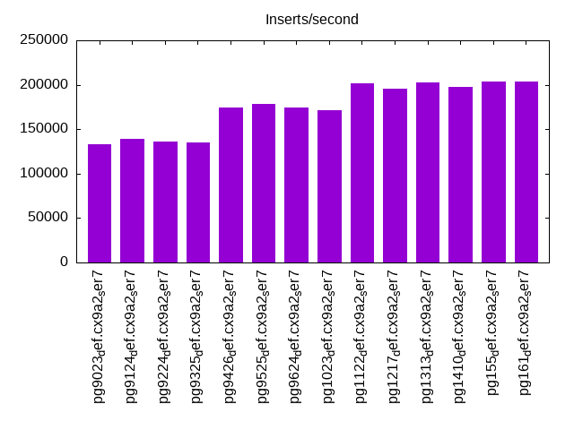
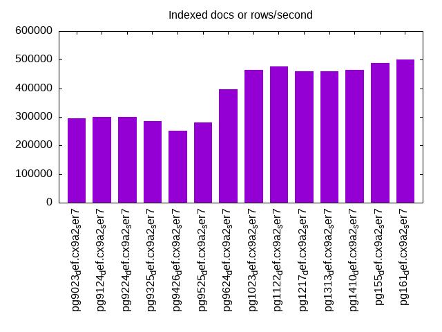
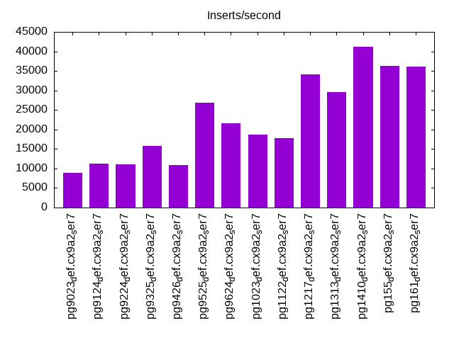
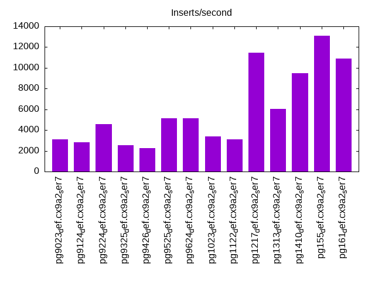
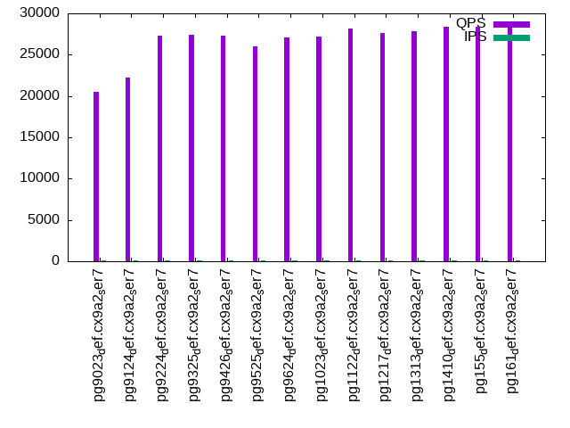
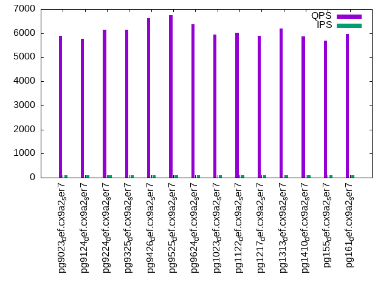
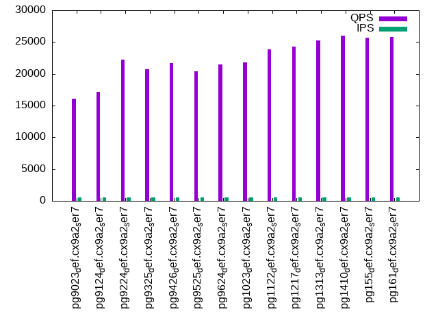
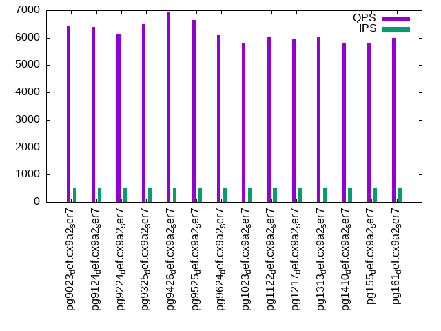
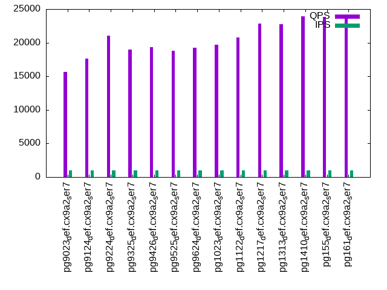
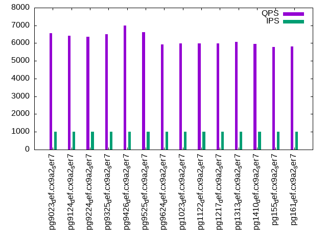

This is a report for the insert benchmark with 40M docs and 1 client(s). It is generated by scripts (bash, awk, sed) and Tufte might not be impressed. An overview of the insert benchmark is here and a short update is here. Below, by DBMS, I mean DBMS+version.config. An example is my8020.c10b40 where my means MySQL, 8020 is version 8.0.20 and c10b40 is the name for the configuration file.
The test server has 8 AMD cores, 32G RAM and an NVMe SSD. It is described here as the Beelink SER7 7840HS. The benchmark was run with 1 client and there were 1 or 3 connections per client (1 for queries or inserts without rate limits, 1+1 for rate limited inserts+deletes). It uses 1 table. It loads 40M rows per table without secondary indexes, creates 3 secondary indexes per table, then inserts 50m+50m rows per table with a delete per insert to avoid growing the table. It then does 6 read+write tests for 1800s each that do queries as fast as possible with 100,100,500,500,1000,1000 inserts/s and the same for deletes/s per client concurrent with the queries. The database is cached in memory. Clients and the DBMS share one server. The per-database configs are in the per-database subdirectories here.
The tested DBMS are:
The numbers are inserts/s for l.i0, l.i1 and l.i2, indexed docs (or rows) /s for l.x and queries/s for qr100, qp100 thru qr1000, qp1000" The values are the average rate over the entire test for inserts (IPS) and queries (QPS). The range of values for IPS and QPS is split into 3 parts: bottom 25%, middle 50%, top 25%. Values in the bottom 25% have a red background, values in the top 25% have a green background and values in the middle have no color. A gray background is used for values that can be ignored because the DBMS did not sustain the target insert rate. Red backgrounds are not used when the minimum value is within 80% of the max value.
| dbms | l.i0 | l.x | l.i1 | l.i2 | qr100 | qp100 | qr500 | qp500 | qr1000 | qp1000 |
|---|---|---|---|---|---|---|---|---|---|---|
| pg9023_def.cx9a2_ser7 | 133333 | 296297 | 8903 | 3099 | 20548 | 5894 | 16060 | 6431 | 15672 | 6570 |
| pg9124_def.cx9a2_ser7 | 139373 | 300753 | 11167 | 2849 | 22284 | 5771 | 17172 | 6407 | 17586 | 6429 |
| pg9224_def.cx9a2_ser7 | 136054 | 300753 | 10986 | 4564 | 27287 | 6136 | 22186 | 6151 | 21077 | 6368 |
| pg9325_def.cx9a2_ser7 | 135135 | 285715 | 15736 | 2532 | 27402 | 6156 | 20666 | 6508 | 19000 | 6508 |
| pg9426_def.cx9a2_ser7 | 173913 | 251573 | 10831 | 2277 | 27270 | 6632 | 21715 | 6962 | 19373 | 7002 |
| pg9525_def.cx9a2_ser7 | 178571 | 279721 | 26882 | 5126 | 26044 | 6741 | 20447 | 6641 | 18787 | 6621 |
| pg9624_def.cx9a2_ser7 | 174672 | 396040 | 21540 | 5149 | 27044 | 6382 | 21466 | 6087 | 19289 | 5927 |
| pg1023_def.cx9a2_ser7 | 171674 | 465117 | 18622 | 3368 | 27211 | 5937 | 21761 | 5801 | 19713 | 5993 |
| pg1122_def.cx9a2_ser7 | 202020 | 476192 | 17786 | 3108 | 28176 | 6010 | 23822 | 6039 | 20766 | 5980 |
| pg1217_def.cx9a2_ser7 | 195122 | 459771 | 34072 | 11481 | 27597 | 5900 | 24304 | 5980 | 22819 | 5973 |
| pg1313_def.cx9a2_ser7 | 203046 | 459771 | 29520 | 6035 | 27876 | 6200 | 25305 | 6026 | 22712 | 6082 |
| pg1410_def.cx9a2_ser7 | 198020 | 465117 | 41152 | 9497 | 28331 | 5855 | 25972 | 5800 | 23885 | 5967 |
| pg155_def.cx9a2_ser7 | 204082 | 487806 | 36265 | 13072 | 28414 | 5688 | 25721 | 5824 | 23828 | 5796 |
| pg161_def.cx9a2_ser7 | 204082 | 500001 | 36036 | 10917 | 28332 | 5964 | 25829 | 5996 | 23857 | 5808 |
This table has relative throughput, throughput for the DBMS relative to the DBMS in the first line, using the absolute throughput from the previous table. Values less than 0.95 have a yellow background. Values greater than 1.05 have a blue background.
| dbms | l.i0 | l.x | l.i1 | l.i2 | qr100 | qp100 | qr500 | qp500 | qr1000 | qp1000 |
|---|---|---|---|---|---|---|---|---|---|---|
| pg9023_def.cx9a2_ser7 | 1.00 | 1.00 | 1.00 | 1.00 | 1.00 | 1.00 | 1.00 | 1.00 | 1.00 | 1.00 |
| pg9124_def.cx9a2_ser7 | 1.05 | 1.02 | 1.25 | 0.92 | 1.08 | 0.98 | 1.07 | 1.00 | 1.12 | 0.98 |
| pg9224_def.cx9a2_ser7 | 1.02 | 1.02 | 1.23 | 1.47 | 1.33 | 1.04 | 1.38 | 0.96 | 1.34 | 0.97 |
| pg9325_def.cx9a2_ser7 | 1.01 | 0.96 | 1.77 | 0.82 | 1.33 | 1.04 | 1.29 | 1.01 | 1.21 | 0.99 |
| pg9426_def.cx9a2_ser7 | 1.30 | 0.85 | 1.22 | 0.73 | 1.33 | 1.13 | 1.35 | 1.08 | 1.24 | 1.07 |
| pg9525_def.cx9a2_ser7 | 1.34 | 0.94 | 3.02 | 1.65 | 1.27 | 1.14 | 1.27 | 1.03 | 1.20 | 1.01 |
| pg9624_def.cx9a2_ser7 | 1.31 | 1.34 | 2.42 | 1.66 | 1.32 | 1.08 | 1.34 | 0.95 | 1.23 | 0.90 |
| pg1023_def.cx9a2_ser7 | 1.29 | 1.57 | 2.09 | 1.09 | 1.32 | 1.01 | 1.35 | 0.90 | 1.26 | 0.91 |
| pg1122_def.cx9a2_ser7 | 1.52 | 1.61 | 2.00 | 1.00 | 1.37 | 1.02 | 1.48 | 0.94 | 1.33 | 0.91 |
| pg1217_def.cx9a2_ser7 | 1.46 | 1.55 | 3.83 | 3.70 | 1.34 | 1.00 | 1.51 | 0.93 | 1.46 | 0.91 |
| pg1313_def.cx9a2_ser7 | 1.52 | 1.55 | 3.32 | 1.95 | 1.36 | 1.05 | 1.58 | 0.94 | 1.45 | 0.93 |
| pg1410_def.cx9a2_ser7 | 1.49 | 1.57 | 4.62 | 3.06 | 1.38 | 0.99 | 1.62 | 0.90 | 1.52 | 0.91 |
| pg155_def.cx9a2_ser7 | 1.53 | 1.65 | 4.07 | 4.22 | 1.38 | 0.97 | 1.60 | 0.91 | 1.52 | 0.88 |
| pg161_def.cx9a2_ser7 | 1.53 | 1.69 | 4.05 | 3.52 | 1.38 | 1.01 | 1.61 | 0.93 | 1.52 | 0.88 |
This lists the average rate of inserts/s for the tests that do inserts concurrent with queries. For such tests the query rate is listed in the table above. The read+write tests are setup so that the insert rate should match the target rate every second. Cells that are not at least 95% of the target have a red background to indicate a failure to satisfy the target.
| dbms | qr100.L1 | qp100.L2 | qr500.L3 | qp500.L4 | qr1000.L5 | qp1000.L6 |
|---|---|---|---|---|---|---|
| pg9023_def.cx9a2_ser7 | 100 | 100 | 499 | 499 | 998 | 998 |
| pg9124_def.cx9a2_ser7 | 100 | 100 | 499 | 499 | 998 | 998 |
| pg9224_def.cx9a2_ser7 | 100 | 100 | 499 | 499 | 998 | 998 |
| pg9325_def.cx9a2_ser7 | 100 | 100 | 499 | 499 | 998 | 999 |
| pg9426_def.cx9a2_ser7 | 100 | 100 | 499 | 499 | 998 | 999 |
| pg9525_def.cx9a2_ser7 | 100 | 100 | 499 | 499 | 998 | 998 |
| pg9624_def.cx9a2_ser7 | 100 | 100 | 499 | 499 | 998 | 998 |
| pg1023_def.cx9a2_ser7 | 100 | 100 | 499 | 499 | 998 | 998 |
| pg1122_def.cx9a2_ser7 | 100 | 100 | 499 | 499 | 998 | 998 |
| pg1217_def.cx9a2_ser7 | 100 | 100 | 499 | 499 | 998 | 998 |
| pg1313_def.cx9a2_ser7 | 100 | 100 | 499 | 499 | 998 | 998 |
| pg1410_def.cx9a2_ser7 | 100 | 100 | 499 | 499 | 998 | 998 |
| pg155_def.cx9a2_ser7 | 100 | 100 | 499 | 499 | 998 | 998 |
| pg161_def.cx9a2_ser7 | 100 | 100 | 499 | 499 | 998 | 998 |
| target | 100 | 100 | 500 | 500 | 1000 | 1000 |
l.i0: load without secondary indexes. Graphs for performance per 1-second interval are here.
Average throughput:
Insert response time histogram: each cell has the percentage of responses that take <= the time in the header and max is the max response time in seconds. For the max column values in the top 25% of the range have a red background and in the bottom 25% of the range have a green background. The red background is not used when the min value is within 80% of the max value.
| dbms | 256us | 1ms | 4ms | 16ms | 64ms | 256ms | 1s | 4s | 16s | gt | max |
|---|---|---|---|---|---|---|---|---|---|---|---|
| pg9023_def.cx9a2_ser7 | 98.560 | 0.970 | 0.404 | 0.066 | 0.056 | ||||||
| pg9124_def.cx9a2_ser7 | 99.225 | 0.673 | 0.102 | 0.001 | 0.054 | ||||||
| pg9224_def.cx9a2_ser7 | 99.149 | 0.795 | 0.055 | 0.001 | 0.042 | ||||||
| pg9325_def.cx9a2_ser7 | 98.999 | 0.895 | 0.105 | 0.001 | 0.056 | ||||||
| pg9426_def.cx9a2_ser7 | 99.736 | 0.163 | 0.099 | 0.001 | 0.043 | ||||||
| pg9525_def.cx9a2_ser7 | 99.955 | 0.045 | 0.002 | ||||||||
| pg9624_def.cx9a2_ser7 | 99.951 | 0.049 | 0.002 | ||||||||
| pg1023_def.cx9a2_ser7 | 99.934 | 0.066 | 0.002 | ||||||||
| pg1122_def.cx9a2_ser7 | 99.974 | 0.026 | 0.002 | ||||||||
| pg1217_def.cx9a2_ser7 | 99.969 | 0.031 | 0.002 | ||||||||
| pg1313_def.cx9a2_ser7 | 99.968 | 0.032 | 0.003 | ||||||||
| pg1410_def.cx9a2_ser7 | 99.973 | 0.027 | 0.003 | ||||||||
| pg155_def.cx9a2_ser7 | 99.975 | 0.025 | 0.002 | ||||||||
| pg161_def.cx9a2_ser7 | 99.977 | 0.023 | 0.002 |
Performance metrics for the DBMS listed above. Some are normalized by throughput, others are not. Legend for results is here.
ips qps rps rmbps wps wmbps rpq rkbpq wpi wkbpi csps cpups cspq cpupq dbgb1 dbgb2 rss maxop p50 p99 tag 133333 0 0 0.0 597.8 49.0 0.000 0.000 0.004 0.376 13869 9.6 0.104 6 3.8 4.0 1.1 0.056 132864 116978 pg9023_def.cx9a2_ser7 139373 0 0 0.0 631.0 51.2 0.000 0.000 0.005 0.376 14475 9.2 0.104 5 3.8 4.0 0.4 0.054 138348 131657 pg9124_def.cx9a2_ser7 136054 0 0 0.0 1725.7 50.2 0.000 0.000 0.013 0.378 17655 9.5 0.130 6 3.8 4.0 1.2 0.042 136153 111990 pg9224_def.cx9a2_ser7 135135 0 0 0.0 1460.6 55.9 0.000 0.000 0.011 0.423 16904 9.8 0.125 6 3.8 4.0 3.1 0.056 134860 120772 pg9325_def.cx9a2_ser7 173913 0 0 0.0 1513.8 70.8 0.000 0.000 0.009 0.417 20191 11.2 0.116 5 3.8 4.0 2.5 0.043 173040 156803 pg9426_def.cx9a2_ser7 178571 0 0 0.0 911.7 76.5 0.000 0.000 0.005 0.439 21430 10.7 0.120 5 3.8 10.4 1.2 0.002 178099 172212 pg9525_def.cx9a2_ser7 174672 0 0 0.0 210.0 74.7 0.000 0.000 0.001 0.438 21762 11.1 0.125 5 3.8 10.4 0.5 0.002 173606 167323 pg9624_def.cx9a2_ser7 171674 0 0 0.0 206.7 73.0 0.000 0.000 0.001 0.436 21469 10.8 0.125 5 3.8 10.4 0.5 0.002 170709 156731 pg1023_def.cx9a2_ser7 202020 0 0 0.0 241.0 84.8 0.000 0.000 0.001 0.430 25372 11.5 0.126 5 3.8 10.4 0.5 0.002 201680 188243 pg1122_def.cx9a2_ser7 195122 0 0 0.0 233.0 83.1 0.000 0.000 0.001 0.436 24664 11.7 0.126 5 3.8 10.4 4.0 0.002 194191 181902 pg1217_def.cx9a2_ser7 203046 0 0 0.0 246.0 87.7 0.000 0.000 0.001 0.442 25621 11.8 0.126 5 3.8 10.4 0.5 0.003 202581 190501 pg1313_def.cx9a2_ser7 198020 0 0 0.0 239.3 85.2 0.000 0.000 0.001 0.441 25991 11.4 0.131 5 3.8 10.4 3.4 0.003 196486 183793 pg1410_def.cx9a2_ser7 204082 0 0 0.0 245.9 87.9 0.000 0.000 0.001 0.441 26585 11.4 0.130 4 3.8 10.4 3.5 0.002 202582 190007 pg155_def.cx9a2_ser7 204082 0 0 0.0 245.2 87.8 0.000 0.000 0.001 0.440 26560 11.6 0.130 5 3.8 10.4 1.8 0.002 201774 187668 pg161_def.cx9a2_ser7
l.x: create secondary indexes.
Average throughput:
Performance metrics for the DBMS listed above. Some are normalized by throughput, others are not. Legend for results is here.
ips qps rps rmbps wps wmbps rpq rkbpq wpi wkbpi csps cpups cspq cpupq dbgb1 dbgb2 rss maxop p50 p99 tag 296297 0 0 0.0 596.7 81.9 0.000 0.000 0.002 0.283 296 6.1 0.001 2 7.7 7.9 3.5 0.002 NA NA pg9023_def.cx9a2_ser7 300753 0 0 0.0 584.5 83.1 0.000 0.000 0.002 0.283 454 6.1 0.002 2 7.7 7.9 3.5 0.002 NA NA pg9124_def.cx9a2_ser7 300753 0 0 0.0 721.7 83.9 0.000 0.000 0.002 0.286 435 6.0 0.001 2 7.7 7.9 3.5 0.002 NA NA pg9224_def.cx9a2_ser7 285715 0 0 0.0 623.6 89.1 0.000 0.000 0.002 0.319 468 6.2 0.002 2 7.7 7.9 4.0 0.002 NA NA pg9325_def.cx9a2_ser7 251573 0 0 0.0 510.0 77.4 0.000 0.000 0.002 0.315 392 6.4 0.002 2 7.7 7.9 4.0 0.002 NA NA pg9426_def.cx9a2_ser7 279721 0 0 0.0 193.8 88.9 0.000 0.000 0.001 0.326 687 5.9 0.002 2 7.7 17.7 4.0 0.002 NA NA pg9525_def.cx9a2_ser7 396040 0 0 0.0 275.8 124.2 0.000 0.000 0.001 0.321 1058 5.9 0.003 1 7.7 17.7 4.0 0.002 NA NA pg9624_def.cx9a2_ser7 465117 0 0 0.0 288.4 130.8 0.000 0.000 0.001 0.288 967 5.9 0.002 1 7.7 17.7 4.0 0.002 NA NA pg1023_def.cx9a2_ser7 476192 0 0 0.0 253.3 116.2 0.000 0.000 0.001 0.250 808 5.9 0.002 1 7.7 17.8 4.0 0.002 NA NA pg1122_def.cx9a2_ser7 459771 0 0 0.0 293.0 135.1 0.000 0.000 0.001 0.301 732 6.1 0.002 1 7.7 17.7 4.0 0.002 NA NA pg1217_def.cx9a2_ser7 459771 0 0 0.0 300.4 137.1 0.000 0.000 0.001 0.305 847 5.9 0.002 1 7.7 17.8 4.0 0.002 NA NA pg1313_def.cx9a2_ser7 465117 0 0 0.0 298.8 137.0 0.000 0.000 0.001 0.302 930 6.0 0.002 1 7.7 17.8 4.0 0.002 NA NA pg1410_def.cx9a2_ser7 487806 0 0 0.0 330.7 147.0 0.000 0.000 0.001 0.309 968 6.0 0.002 1 7.7 17.8 4.0 0.002 NA NA pg155_def.cx9a2_ser7 500001 0 0 0.0 356.0 161.6 0.000 0.000 0.001 0.331 896 5.9 0.002 1 7.7 17.8 4.0 0.002 NA NA pg161_def.cx9a2_ser7
l.i1: continue load after secondary indexes created with 50 inserts per transaction. Graphs for performance per 1-second interval are here.
Average throughput:
Insert response time histogram: each cell has the percentage of responses that take <= the time in the header and max is the max response time in seconds. For the max column values in the top 25% of the range have a red background and in the bottom 25% of the range have a green background. The red background is not used when the min value is within 80% of the max value.
| dbms | 256us | 1ms | 4ms | 16ms | 64ms | 256ms | 1s | 4s | 16s | gt | max |
|---|---|---|---|---|---|---|---|---|---|---|---|
| pg9023_def.cx9a2_ser7 | 71.056 | 26.857 | 2.080 | 0.006 | 0.121 | ||||||
| pg9124_def.cx9a2_ser7 | 87.407 | 11.696 | 0.846 | 0.052 | 0.242 | ||||||
| pg9224_def.cx9a2_ser7 | 81.141 | 17.584 | 1.058 | 0.216 | 0.001 | 0.333 | |||||
| pg9325_def.cx9a2_ser7 | 0.825 | 92.621 | 5.559 | 0.897 | 0.099 | nonzero | 0.271 | ||||
| pg9426_def.cx9a2_ser7 | 2.710 | 78.277 | 18.025 | 0.891 | 0.098 | 0.001 | 0.385 | ||||
| pg9525_def.cx9a2_ser7 | 86.721 | 13.246 | 0.011 | 0.022 | nonzero | nonzero | 0.259 | ||||
| pg9624_def.cx9a2_ser7 | 82.938 | 17.032 | 0.022 | 0.008 | 0.060 | ||||||
| pg1023_def.cx9a2_ser7 | 79.741 | 20.228 | 0.023 | 0.008 | nonzero | 0.068 | |||||
| pg1122_def.cx9a2_ser7 | 81.360 | 18.639 | 0.001 | 0.001 | 0.059 | ||||||
| pg1217_def.cx9a2_ser7 | 88.159 | 11.833 | 0.005 | 0.003 | 0.056 | ||||||
| pg1313_def.cx9a2_ser7 | 82.312 | 17.672 | 0.012 | 0.003 | 0.047 | ||||||
| pg1410_def.cx9a2_ser7 | 81.119 | 18.870 | 0.009 | 0.003 | 0.047 | ||||||
| pg155_def.cx9a2_ser7 | 82.908 | 17.071 | 0.009 | 0.012 | 0.039 | ||||||
| pg161_def.cx9a2_ser7 | 81.764 | 18.227 | 0.007 | 0.002 | 0.040 |
Delete response time histogram: each cell has the percentage of responses that take <= the time in the header and max is the max response time in seconds. For the max column values in the top 25% of the range have a red background and in the bottom 25% of the range have a green background. The red background is not used when the min value is within 80% of the max value.
| dbms | 256us | 1ms | 4ms | 16ms | 64ms | 256ms | 1s | 4s | 16s | gt | max |
|---|---|---|---|---|---|---|---|---|---|---|---|
| pg9023_def.cx9a2_ser7 | 2.940 | 67.543 | 15.479 | 11.830 | 2.204 | 0.004 | 0.116 | ||||
| pg9124_def.cx9a2_ser7 | 5.454 | 68.056 | 1.030 | 25.146 | 0.302 | 0.012 | 0.157 | ||||
| pg9224_def.cx9a2_ser7 | 8.464 | 66.312 | 5.444 | 19.344 | 0.358 | 0.078 | 0.001 | 0.304 | |||
| pg9325_def.cx9a2_ser7 | 24.427 | 56.714 | 13.104 | 0.269 | 5.430 | 0.053 | 0.002 | 0.001 | 1.414 | ||
| pg9426_def.cx9a2_ser7 | 24.341 | 56.696 | 0.916 | 15.614 | 2.398 | 0.033 | 0.003 | 0.887 | |||
| pg9525_def.cx9a2_ser7 | 76.197 | 8.880 | 7.667 | 5.281 | 1.973 | 0.003 | nonzero | 0.296 | |||
| pg9624_def.cx9a2_ser7 | 77.191 | 7.851 | 3.035 | 11.209 | 0.712 | 0.002 | nonzero | 0.323 | |||
| pg1023_def.cx9a2_ser7 | 73.043 | 9.860 | 0.818 | 16.257 | 0.019 | 0.002 | 0.217 | ||||
| pg1122_def.cx9a2_ser7 | 78.362 | 4.383 | 0.695 | 16.264 | 0.295 | 0.058 | |||||
| pg1217_def.cx9a2_ser7 | 80.410 | 8.772 | 0.719 | 10.096 | 0.004 | 0.054 | |||||
| pg1313_def.cx9a2_ser7 | 77.443 | 6.737 | 0.379 | 15.437 | 0.003 | 0.045 | |||||
| pg1410_def.cx9a2_ser7 | 75.894 | 7.172 | 14.973 | 1.959 | 0.002 | 0.045 | |||||
| pg155_def.cx9a2_ser7 | 77.688 | 5.794 | 9.239 | 7.270 | 0.009 | 0.037 | |||||
| pg161_def.cx9a2_ser7 | 76.693 | 6.350 | 10.774 | 6.182 | 0.001 | 0.040 |
Performance metrics for the DBMS listed above. Some are normalized by throughput, others are not. Legend for results is here.
ips qps rps rmbps wps wmbps rpq rkbpq wpi wkbpi csps cpups cspq cpupq dbgb1 dbgb2 rss maxop p50 p99 tag 8903 0 0 0.0 18204.9 315.4 0.000 0.001 2.045 36.279 7002 10.1 0.786 91 10.3 10.5 2.9 0.121 10288 2697 pg9023_def.cx9a2_ser7 11167 0 1 0.0 21750.7 392.4 0.000 0.001 1.948 35.979 7435 11.8 0.666 85 10.3 10.6 4.5 0.242 13085 3896 pg9124_def.cx9a2_ser7 10986 0 1 0.0 17267.5 396.0 0.000 0.001 1.572 36.912 10402 12.2 0.947 89 10.3 12.9 1.9 0.333 11295 3846 pg9224_def.cx9a2_ser7 15736 0 2 0.0 9232.4 390.5 0.000 0.001 0.587 25.411 15402 12.3 0.979 63 10.6 14.3 5.3 0.271 14733 2297 pg9325_def.cx9a2_ser7 10831 0 0 0.0 11445.7 294.4 0.000 0.000 1.057 27.830 9013 11.5 0.832 85 10.7 11.3 0.2 0.385 4294 2797 pg9426_def.cx9a2_ser7 26882 0 0 0.0 739.1 49.9 0.000 0.000 0.027 1.902 13019 10.4 0.484 31 10.7 48.8 9.0 0.259 6842 2198 pg9525_def.cx9a2_ser7 21540 0 0 0.0 136.2 40.7 0.000 0.000 0.006 1.932 11158 9.9 0.518 37 10.7 49.1 8.5 0.060 4343 2597 pg9624_def.cx9a2_ser7 18622 0 0 0.0 117.0 34.6 0.000 0.000 0.006 1.903 9642 9.5 0.518 41 10.7 48.7 8.5 0.068 4445 3246 pg1023_def.cx9a2_ser7 17786 0 0 0.0 91.4 26.7 0.000 0.000 0.005 1.535 9130 9.3 0.513 42 10.8 44.8 10.5 0.059 3996 3047 pg1122_def.cx9a2_ser7 34072 0 0 0.0 152.6 46.1 0.000 0.000 0.004 1.385 16976 11.7 0.498 27 10.6 43.3 7.1 0.056 23618 4845 pg1217_def.cx9a2_ser7 29520 0 0 0.0 132.3 40.0 0.000 0.000 0.004 1.387 14814 11.1 0.502 30 10.6 43.4 7.7 0.047 8940 5544 pg1313_def.cx9a2_ser7 41152 0 0 0.0 199.8 60.5 0.000 0.000 0.005 1.507 20834 12.1 0.506 24 10.4 44.7 9.2 0.047 52742 10638 pg1410_def.cx9a2_ser7 36265 0 0 0.0 175.6 53.4 0.000 0.000 0.005 1.507 18433 11.3 0.508 25 10.4 44.6 7.3 0.039 29567 6443 pg155_def.cx9a2_ser7 36036 0 0 0.0 176.8 53.2 0.000 0.000 0.005 1.510 18349 11.3 0.509 25 10.4 44.8 6.6 0.040 23824 6243 pg161_def.cx9a2_ser7
l.i2: continue load after secondary indexes created with 5 inserts per transaction. Graphs for performance per 1-second interval are here.
Average throughput:
Insert response time histogram: each cell has the percentage of responses that take <= the time in the header and max is the max response time in seconds. For the max column values in the top 25% of the range have a red background and in the bottom 25% of the range have a green background. The red background is not used when the min value is within 80% of the max value.
| dbms | 256us | 1ms | 4ms | 16ms | 64ms | 256ms | 1s | 4s | 16s | gt | max |
|---|---|---|---|---|---|---|---|---|---|---|---|
| pg9023_def.cx9a2_ser7 | 0.113 | 92.986 | 5.670 | 1.218 | 0.013 | 0.040 | |||||
| pg9124_def.cx9a2_ser7 | 1.925 | 95.735 | 2.150 | 0.158 | 0.030 | 0.002 | 0.208 | ||||
| pg9224_def.cx9a2_ser7 | 3.026 | 95.605 | 1.189 | 0.145 | 0.034 | 0.002 | 0.151 | ||||
| pg9325_def.cx9a2_ser7 | 7.399 | 90.687 | 1.744 | 0.126 | 0.042 | 0.002 | 0.211 | ||||
| pg9426_def.cx9a2_ser7 | 14.309 | 83.812 | 1.721 | 0.122 | 0.033 | 0.003 | 0.240 | ||||
| pg9525_def.cx9a2_ser7 | 85.229 | 14.766 | nonzero | 0.003 | 0.001 | 0.052 | |||||
| pg9624_def.cx9a2_ser7 | 84.897 | 15.102 | nonzero | nonzero | 0.008 | ||||||
| pg1023_def.cx9a2_ser7 | 82.594 | 17.406 | nonzero | nonzero | 0.008 | ||||||
| pg1122_def.cx9a2_ser7 | 80.533 | 19.466 | 0.001 | 0.002 | |||||||
| pg1217_def.cx9a2_ser7 | 84.093 | 15.906 | nonzero | nonzero | 0.013 | ||||||
| pg1313_def.cx9a2_ser7 | 87.997 | 12.003 | nonzero | nonzero | 0.012 | ||||||
| pg1410_def.cx9a2_ser7 | 81.210 | 18.790 | nonzero | nonzero | nonzero | 0.035 | |||||
| pg155_def.cx9a2_ser7 | 84.760 | 15.240 | nonzero | nonzero | 0.015 | ||||||
| pg161_def.cx9a2_ser7 | 81.167 | 18.833 | nonzero | 0.002 |
Delete response time histogram: each cell has the percentage of responses that take <= the time in the header and max is the max response time in seconds. For the max column values in the top 25% of the range have a red background and in the bottom 25% of the range have a green background. The red background is not used when the min value is within 80% of the max value.
| dbms | 256us | 1ms | 4ms | 16ms | 64ms | 256ms | 1s | 4s | 16s | gt | max |
|---|---|---|---|---|---|---|---|---|---|---|---|
| pg9023_def.cx9a2_ser7 | 70.320 | 8.984 | 10.712 | 9.918 | 0.067 | nonzero | 0.090 | ||||
| pg9124_def.cx9a2_ser7 | 71.215 | 0.718 | 3.922 | 24.126 | 0.018 | 0.001 | 0.111 | ||||
| pg9224_def.cx9a2_ser7 | 73.650 | 7.569 | 14.547 | 4.207 | 0.025 | 0.002 | 0.150 | ||||
| pg9325_def.cx9a2_ser7 | 80.568 | 5.034 | 5.652 | 0.047 | 8.697 | 0.002 | nonzero | 0.737 | |||
| pg9426_def.cx9a2_ser7 | 80.283 | 0.544 | 0.010 | 19.132 | 0.028 | 0.003 | nonzero | 0.385 | |||
| pg9525_def.cx9a2_ser7 | 84.825 | 0.859 | 2.647 | 11.639 | 0.029 | nonzero | 0.185 | ||||
| pg9624_def.cx9a2_ser7 | 83.924 | 1.848 | 5.571 | 7.602 | 1.054 | nonzero | 0.128 | ||||
| pg1023_def.cx9a2_ser7 | 82.710 | 0.040 | nonzero | 17.250 | nonzero | nonzero | 0.069 | ||||
| pg1122_def.cx9a2_ser7 | 80.629 | 0.033 | 0.003 | 19.335 | nonzero | 0.019 | |||||
| pg1217_def.cx9a2_ser7 | 80.221 | 8.021 | 11.494 | 0.264 | nonzero | 0.026 | |||||
| pg1313_def.cx9a2_ser7 | 84.068 | 7.762 | 0.515 | 7.655 | nonzero | 0.023 | |||||
| pg1410_def.cx9a2_ser7 | 80.245 | 0.102 | 19.373 | 0.279 | nonzero | 0.035 | |||||
| pg155_def.cx9a2_ser7 | 84.317 | 0.218 | 15.465 | 0.004 | |||||||
| pg161_def.cx9a2_ser7 | 80.619 | 0.151 | 19.230 | 0.001 | 0.007 |
Performance metrics for the DBMS listed above. Some are normalized by throughput, others are not. Legend for results is here.
ips qps rps rmbps wps wmbps rpq rkbpq wpi wkbpi csps cpups cspq cpupq dbgb1 dbgb2 rss maxop p50 p99 tag 3099 0 13 0.2 6351.4 106.5 0.004 0.066 2.050 35.204 13244 8.5 4.274 219 10.4 10.7 2.1 0.040 484 390 pg9023_def.cx9a2_ser7 2849 0 13 0.2 5665.9 96.5 0.004 0.063 1.989 34.670 11733 8.6 4.118 241 10.5 10.9 1.3 0.208 959 594 pg9124_def.cx9a2_ser7 4564 0 18 0.3 9086.8 160.4 0.004 0.062 1.991 35.977 20165 10.0 4.418 175 10.5 10.9 3.6 0.151 1848 375 pg9224_def.cx9a2_ser7 2532 0 12 0.2 4861.6 86.7 0.005 0.066 1.920 35.069 11420 8.1 4.510 256 10.9 11.2 8.2 0.211 280 250 pg9325_def.cx9a2_ser7 2277 0 0 0.0 4089.6 74.2 0.000 0.000 1.796 33.353 10526 8.1 4.622 285 10.9 11.2 8.9 0.240 499 390 pg9426_def.cx9a2_ser7 5126 0 0 0.0 301.9 8.3 0.000 0.000 0.059 1.649 20705 8.1 4.040 126 11.0 51.0 5.5 0.052 764 539 pg9525_def.cx9a2_ser7 5149 0 0 0.0 34.9 7.9 0.000 0.000 0.007 1.565 23780 8.6 4.618 134 11.1 51.1 11.0 0.008 769 245 pg9624_def.cx9a2_ser7 3368 0 0 0.0 32.3 6.1 0.000 0.000 0.010 1.852 15416 8.1 4.577 192 11.1 50.1 8.8 0.008 624 420 pg1023_def.cx9a2_ser7 3108 0 0 0.0 34.4 6.9 0.000 0.000 0.011 2.267 14464 8.1 4.653 208 11.1 45.2 8.6 0.002 644 434 pg1122_def.cx9a2_ser7 11481 0 0 0.0 77.5 21.2 0.000 0.000 0.007 1.891 52730 11.3 4.593 79 10.8 49.4 6.8 0.013 3667 525 pg1217_def.cx9a2_ser7 6035 0 0 0.0 48.9 11.3 0.000 0.000 0.008 1.909 27938 9.1 4.629 121 10.8 45.8 8.5 0.012 594 524 pg1313_def.cx9a2_ser7 9497 0 0 0.0 52.5 14.5 0.000 0.000 0.006 1.564 43396 9.9 4.570 83 10.5 50.5 0.4 0.035 2577 1224 pg1410_def.cx9a2_ser7 13072 0 0 0.0 70.0 20.0 0.000 0.000 0.005 1.566 59351 10.9 4.540 67 10.6 50.6 6.4 0.015 3571 1823 pg155_def.cx9a2_ser7 10917 0 0 0.0 58.6 16.5 0.000 0.000 0.005 1.550 50451 10.4 4.621 76 10.5 50.6 6.8 0.002 3136 1543 pg161_def.cx9a2_ser7
qr100.L1: range queries with 100 insert/s per client. Graphs for performance per 1-second interval are here.
Average throughput:
Query response time histogram: each cell has the percentage of responses that take <= the time in the header and max is the max response time in seconds. For max values in the top 25% of the range have a red background and in the bottom 25% of the range have a green background. The red background is not used when the min value is within 80% of the max value.
| dbms | 256us | 1ms | 4ms | 16ms | 64ms | 256ms | 1s | 4s | 16s | gt | max |
|---|---|---|---|---|---|---|---|---|---|---|---|
| pg9023_def.cx9a2_ser7 | 99.986 | 0.013 | nonzero | 0.001 | nonzero | 0.017 | |||||
| pg9124_def.cx9a2_ser7 | 99.989 | 0.010 | nonzero | 0.001 | 0.010 | ||||||
| pg9224_def.cx9a2_ser7 | 99.995 | 0.005 | nonzero | 0.009 | |||||||
| pg9325_def.cx9a2_ser7 | 99.995 | 0.005 | nonzero | 0.002 | |||||||
| pg9426_def.cx9a2_ser7 | 99.995 | 0.005 | 0.001 | ||||||||
| pg9525_def.cx9a2_ser7 | 99.994 | 0.006 | 0.001 | ||||||||
| pg9624_def.cx9a2_ser7 | 99.995 | 0.005 | 0.001 | ||||||||
| pg1023_def.cx9a2_ser7 | 99.994 | 0.006 | nonzero | 0.002 | |||||||
| pg1122_def.cx9a2_ser7 | 99.994 | 0.006 | nonzero | 0.001 | |||||||
| pg1217_def.cx9a2_ser7 | 99.995 | 0.005 | nonzero | 0.001 | |||||||
| pg1313_def.cx9a2_ser7 | 99.995 | 0.005 | 0.001 | ||||||||
| pg1410_def.cx9a2_ser7 | 99.995 | 0.005 | nonzero | 0.004 | |||||||
| pg155_def.cx9a2_ser7 | 99.995 | 0.005 | nonzero | 0.005 | |||||||
| pg161_def.cx9a2_ser7 | 99.995 | 0.005 | nonzero | 0.003 |
Insert response time histogram: each cell has the percentage of responses that take <= the time in the header and max is the max response time in seconds. For max values in the top 25% of the range have a red background and in the bottom 25% of the range have a green background. The red background is not used when the min value is within 80% of the max value.
| dbms | 256us | 1ms | 4ms | 16ms | 64ms | 256ms | 1s | 4s | 16s | gt | max |
|---|---|---|---|---|---|---|---|---|---|---|---|
| pg9023_def.cx9a2_ser7 | 11.083 | 83.000 | 5.917 | 0.027 | |||||||
| pg9124_def.cx9a2_ser7 | 15.556 | 84.444 | 0.013 | ||||||||
| pg9224_def.cx9a2_ser7 | 10.778 | 89.222 | 0.011 | ||||||||
| pg9325_def.cx9a2_ser7 | 21.917 | 78.083 | 0.010 | ||||||||
| pg9426_def.cx9a2_ser7 | 13.167 | 86.833 | 0.009 | ||||||||
| pg9525_def.cx9a2_ser7 | 0.250 | 99.417 | 0.333 | 0.007 | |||||||
| pg9624_def.cx9a2_ser7 | 0.111 | 99.583 | 0.306 | 0.007 | |||||||
| pg1023_def.cx9a2_ser7 | 0.083 | 99.694 | 0.222 | 0.007 | |||||||
| pg1122_def.cx9a2_ser7 | 0.444 | 99.472 | 0.083 | 0.007 | |||||||
| pg1217_def.cx9a2_ser7 | 0.333 | 99.389 | 0.278 | 0.006 | |||||||
| pg1313_def.cx9a2_ser7 | 0.444 | 99.278 | 0.278 | 0.006 | |||||||
| pg1410_def.cx9a2_ser7 | 0.889 | 98.806 | 0.306 | 0.006 | |||||||
| pg155_def.cx9a2_ser7 | 0.722 | 99.028 | 0.250 | 0.006 | |||||||
| pg161_def.cx9a2_ser7 | 0.611 | 99.167 | 0.222 | 0.006 |
Delete response time histogram: each cell has the percentage of responses that take <= the time in the header and max is the max response time in seconds. For max values in the top 25% of the range have a red background and in the bottom 25% of the range have a green background. The red background is not used when the min value is within 80% of the max value.
| dbms | 256us | 1ms | 4ms | 16ms | 64ms | 256ms | 1s | 4s | 16s | gt | max |
|---|---|---|---|---|---|---|---|---|---|---|---|
| pg9023_def.cx9a2_ser7 | 0.056 | 14.917 | 82.944 | 2.028 | 0.056 | 0.020 | |||||
| pg9124_def.cx9a2_ser7 | 0.056 | 20.556 | 78.889 | 0.500 | 0.005 | ||||||
| pg9224_def.cx9a2_ser7 | 0.028 | 17.333 | 79.472 | 3.167 | 0.013 | ||||||
| pg9325_def.cx9a2_ser7 | 0.028 | 17.556 | 80.361 | 2.056 | 0.013 | ||||||
| pg9426_def.cx9a2_ser7 | 0.194 | 19.722 | 67.694 | 12.389 | 0.006 | ||||||
| pg9525_def.cx9a2_ser7 | 18.000 | 73.083 | 8.917 | 0.006 | |||||||
| pg9624_def.cx9a2_ser7 | 0.028 | 27.306 | 72.028 | 0.639 | 0.004 | ||||||
| pg1023_def.cx9a2_ser7 | 18.917 | 80.778 | 0.306 | 0.005 | |||||||
| pg1122_def.cx9a2_ser7 | 0.028 | 20.389 | 78.944 | 0.639 | 0.004 | ||||||
| pg1217_def.cx9a2_ser7 | 0.444 | 52.417 | 47.139 | 0.002 | |||||||
| pg1313_def.cx9a2_ser7 | 3.167 | 51.167 | 45.667 | 0.003 | |||||||
| pg1410_def.cx9a2_ser7 | 0.111 | 51.528 | 48.361 | 0.002 | |||||||
| pg155_def.cx9a2_ser7 | 0.111 | 58.306 | 41.583 | 0.003 | |||||||
| pg161_def.cx9a2_ser7 | 0.028 | 51.889 | 48.083 | 0.002 |
Performance metrics for the DBMS listed above. Some are normalized by throughput, others are not. Legend for results is here.
ips qps rps rmbps wps wmbps rpq rkbpq wpi wkbpi csps cpups cspq cpupq dbgb1 dbgb2 rss maxop p50 p99 tag 100 20548 1 0.0 204.4 3.0 0.000 0.001 2.048 30.920 78599 5.0 3.825 19 10.4 10.6 0.3 0.017 19638 15742 pg9023_def.cx9a2_ser7 100 22284 2 0.0 203.4 3.0 0.000 0.001 2.038 30.961 85212 4.9 3.824 18 10.5 10.7 0.3 0.010 24464 15902 pg9124_def.cx9a2_ser7 100 27287 0 0.0 204.6 3.0 0.000 0.000 2.052 31.005 104325 4.3 3.823 13 10.5 10.6 0.2 0.009 27397 22264 pg9224_def.cx9a2_ser7 100 27402 0 0.0 219.0 3.0 0.000 0.000 2.195 30.972 104744 4.6 3.823 13 10.9 11.0 1.7 0.002 27490 21896 pg9325_def.cx9a2_ser7 100 27270 0 0.0 220.5 3.0 0.000 0.000 2.210 31.110 104229 4.3 3.822 13 10.9 11.0 2.7 0.001 27440 21048 pg9426_def.cx9a2_ser7 100 26044 0 0.0 7.8 0.8 0.000 0.000 0.078 7.860 99489 4.5 3.820 14 11.0 50.4 11.2 0.001 26290 19387 pg9525_def.cx9a2_ser7 100 27044 0 0.0 8.6 0.8 0.000 0.000 0.086 8.259 103351 4.0 3.822 12 11.1 50.6 11.3 0.001 27139 21656 pg9624_def.cx9a2_ser7 100 27211 0 0.0 10.0 0.8 0.000 0.000 0.100 8.527 103985 4.3 3.821 13 11.1 50.1 11.3 0.002 27307 21624 pg1023_def.cx9a2_ser7 100 28176 0 0.0 8.7 0.8 0.000 0.000 0.087 8.311 107672 4.1 3.821 12 11.1 42.5 1.4 0.001 28242 25300 pg1122_def.cx9a2_ser7 100 27597 0 0.0 9.5 0.8 0.000 0.000 0.095 8.462 105518 4.4 3.824 13 10.8 49.4 2.7 0.001 27825 20250 pg1217_def.cx9a2_ser7 100 27876 0 0.0 9.1 0.8 0.000 0.000 0.091 8.325 106522 4.0 3.821 11 10.8 45.8 0.5 0.001 28049 20508 pg1313_def.cx9a2_ser7 100 28331 0 0.0 8.4 0.8 0.000 0.000 0.084 8.307 108221 4.0 3.820 11 10.5 50.5 0.7 0.004 28466 20859 pg1410_def.cx9a2_ser7 100 28414 0 0.0 8.2 0.8 0.000 0.000 0.082 8.228 108515 4.0 3.819 11 10.6 50.6 0.5 0.005 28487 25253 pg155_def.cx9a2_ser7 100 28332 0 0.0 8.2 0.8 0.000 0.000 0.082 8.269 108204 4.1 3.819 12 10.5 50.6 0.5 0.003 28610 20778 pg161_def.cx9a2_ser7
qp100.L2: point queries with 100 insert/s per client. Graphs for performance per 1-second interval are here.
Average throughput:
Query response time histogram: each cell has the percentage of responses that take <= the time in the header and max is the max response time in seconds. For max values in the top 25% of the range have a red background and in the bottom 25% of the range have a green background. The red background is not used when the min value is within 80% of the max value.
| dbms | 256us | 1ms | 4ms | 16ms | 64ms | 256ms | 1s | 4s | 16s | gt | max |
|---|---|---|---|---|---|---|---|---|---|---|---|
| pg9023_def.cx9a2_ser7 | 98.664 | 1.335 | nonzero | nonzero | 0.010 | ||||||
| pg9124_def.cx9a2_ser7 | 98.146 | 1.853 | nonzero | nonzero | 0.012 | ||||||
| pg9224_def.cx9a2_ser7 | 99.493 | 0.506 | 0.001 | nonzero | 0.012 | ||||||
| pg9325_def.cx9a2_ser7 | 99.305 | 0.685 | 0.009 | nonzero | 0.010 | ||||||
| pg9426_def.cx9a2_ser7 | 99.786 | 0.214 | nonzero | 0.003 | |||||||
| pg9525_def.cx9a2_ser7 | 99.849 | 0.151 | nonzero | 0.001 | |||||||
| pg9624_def.cx9a2_ser7 | 99.679 | 0.321 | nonzero | 0.001 | |||||||
| pg1023_def.cx9a2_ser7 | 99.604 | 0.396 | nonzero | 0.002 | |||||||
| pg1122_def.cx9a2_ser7 | 99.677 | 0.323 | nonzero | 0.001 | |||||||
| pg1217_def.cx9a2_ser7 | 99.704 | 0.295 | nonzero | 0.001 | |||||||
| pg1313_def.cx9a2_ser7 | 99.712 | 0.288 | nonzero | 0.001 | |||||||
| pg1410_def.cx9a2_ser7 | 99.624 | 0.376 | nonzero | nonzero | 0.010 | ||||||
| pg155_def.cx9a2_ser7 | 99.668 | 0.332 | nonzero | nonzero | 0.004 | ||||||
| pg161_def.cx9a2_ser7 | 99.656 | 0.344 | nonzero | 0.001 |
Insert response time histogram: each cell has the percentage of responses that take <= the time in the header and max is the max response time in seconds. For max values in the top 25% of the range have a red background and in the bottom 25% of the range have a green background. The red background is not used when the min value is within 80% of the max value.
| dbms | 256us | 1ms | 4ms | 16ms | 64ms | 256ms | 1s | 4s | 16s | gt | max |
|---|---|---|---|---|---|---|---|---|---|---|---|
| pg9023_def.cx9a2_ser7 | 30.139 | 65.250 | 4.611 | 0.026 | |||||||
| pg9124_def.cx9a2_ser7 | 34.222 | 65.694 | 0.083 | 0.019 | |||||||
| pg9224_def.cx9a2_ser7 | 31.778 | 68.222 | 0.010 | ||||||||
| pg9325_def.cx9a2_ser7 | 34.278 | 65.722 | 0.009 | ||||||||
| pg9426_def.cx9a2_ser7 | 32.278 | 67.694 | 0.028 | 0.016 | |||||||
| pg9525_def.cx9a2_ser7 | 0.028 | 99.667 | 0.306 | 0.006 | |||||||
| pg9624_def.cx9a2_ser7 | 0.139 | 99.806 | 0.056 | 0.006 | |||||||
| pg1023_def.cx9a2_ser7 | 99.722 | 0.278 | 0.006 | ||||||||
| pg1122_def.cx9a2_ser7 | 0.361 | 99.556 | 0.083 | 0.007 | |||||||
| pg1217_def.cx9a2_ser7 | 0.333 | 99.417 | 0.250 | 0.006 | |||||||
| pg1313_def.cx9a2_ser7 | 0.528 | 99.361 | 0.111 | 0.007 | |||||||
| pg1410_def.cx9a2_ser7 | 0.556 | 99.222 | 0.222 | 0.006 | |||||||
| pg155_def.cx9a2_ser7 | 0.722 | 99.139 | 0.139 | 0.006 | |||||||
| pg161_def.cx9a2_ser7 | 0.111 | 99.722 | 0.167 | 0.006 |
Delete response time histogram: each cell has the percentage of responses that take <= the time in the header and max is the max response time in seconds. For max values in the top 25% of the range have a red background and in the bottom 25% of the range have a green background. The red background is not used when the min value is within 80% of the max value.
| dbms | 256us | 1ms | 4ms | 16ms | 64ms | 256ms | 1s | 4s | 16s | gt | max |
|---|---|---|---|---|---|---|---|---|---|---|---|
| pg9023_def.cx9a2_ser7 | 39.306 | 59.306 | 1.389 | 0.022 | |||||||
| pg9124_def.cx9a2_ser7 | 38.000 | 62.000 | 0.010 | ||||||||
| pg9224_def.cx9a2_ser7 | 38.167 | 61.833 | 0.011 | ||||||||
| pg9325_def.cx9a2_ser7 | 37.778 | 62.222 | 0.014 | ||||||||
| pg9426_def.cx9a2_ser7 | 43.167 | 56.833 | 0.014 | ||||||||
| pg9525_def.cx9a2_ser7 | 30.472 | 69.528 | 0.011 | ||||||||
| pg9624_def.cx9a2_ser7 | 41.750 | 58.250 | 0.010 | ||||||||
| pg1023_def.cx9a2_ser7 | 35.806 | 64.194 | 0.010 | ||||||||
| pg1122_def.cx9a2_ser7 | 33.139 | 66.861 | 0.011 | ||||||||
| pg1217_def.cx9a2_ser7 | 5.444 | 93.667 | 0.889 | 0.004 | |||||||
| pg1313_def.cx9a2_ser7 | 11.333 | 87.806 | 0.861 | 0.005 | |||||||
| pg1410_def.cx9a2_ser7 | 8.528 | 90.806 | 0.667 | 0.005 | |||||||
| pg155_def.cx9a2_ser7 | 7.389 | 92.278 | 0.333 | 0.005 | |||||||
| pg161_def.cx9a2_ser7 | 7.222 | 89.167 | 3.611 | 0.004 |
Performance metrics for the DBMS listed above. Some are normalized by throughput, others are not. Legend for results is here.
ips qps rps rmbps wps wmbps rpq rkbpq wpi wkbpi csps cpups cspq cpupq dbgb1 dbgb2 rss maxop p50 p99 tag 100 5894 77 0.6 214.1 3.4 0.013 0.108 2.145 34.535 24497 6.9 4.156 94 10.4 10.6 2.1 0.010 5642 3579 pg9023_def.cx9a2_ser7 100 5771 80 0.7 210.0 3.3 0.014 0.116 2.104 34.112 23992 6.0 4.158 83 10.5 10.7 2.3 0.012 5498 3004 pg9124_def.cx9a2_ser7 100 6136 62 0.6 214.8 3.4 0.010 0.097 2.153 34.523 25319 6.3 4.127 82 10.5 10.6 4.3 0.012 5450 3787 pg9224_def.cx9a2_ser7 100 6156 90 0.8 349.6 4.0 0.015 0.141 3.503 41.286 25885 6.4 4.205 83 10.9 11.0 1.1 0.010 5768 2589 pg9325_def.cx9a2_ser7 100 6632 0 0.0 347.2 4.0 0.000 0.000 3.479 40.736 27659 6.5 4.170 78 10.9 11.0 2.5 0.003 6153 5242 pg9426_def.cx9a2_ser7 100 6741 0 0.0 123.1 1.9 0.000 0.000 1.234 19.073 27654 6.4 4.102 76 11.0 47.4 11.2 0.001 6222 5226 pg9525_def.cx9a2_ser7 100 6382 0 0.0 73.7 1.8 0.000 0.000 0.738 18.939 26207 6.5 4.106 81 11.1 47.2 11.3 0.001 6137 5099 pg9624_def.cx9a2_ser7 100 5937 0 0.0 73.8 1.8 0.000 0.000 0.739 18.897 24425 6.6 4.114 89 11.1 47.0 11.3 0.002 5626 4171 pg1023_def.cx9a2_ser7 100 6010 0 0.0 74.1 1.8 0.000 0.000 0.743 18.917 24707 6.7 4.111 89 11.1 41.3 2.6 0.001 5562 4203 pg1122_def.cx9a2_ser7 100 5900 0 0.0 72.7 1.8 0.000 0.000 0.728 18.866 24268 6.7 4.113 91 10.8 48.5 1.0 0.001 5434 4219 pg1217_def.cx9a2_ser7 100 6200 0 0.0 73.6 1.8 0.000 0.000 0.738 18.888 25475 6.7 4.109 86 10.8 45.2 1.4 0.001 5726 4330 pg1313_def.cx9a2_ser7 100 5855 0 0.0 72.4 1.8 0.000 0.000 0.725 18.808 24109 6.6 4.118 90 10.5 50.1 0.7 0.010 5418 4171 pg1410_def.cx9a2_ser7 100 5688 0 0.0 73.0 1.8 0.000 0.000 0.731 18.810 23167 6.6 4.073 93 10.6 50.2 1.6 0.004 5225 4156 pg155_def.cx9a2_ser7 100 5964 0 0.0 72.5 1.8 0.000 0.000 0.726 18.833 24253 6.7 4.066 90 10.5 50.2 1.0 0.001 5579 4587 pg161_def.cx9a2_ser7
qr500.L3: range queries with 500 insert/s per client. Graphs for performance per 1-second interval are here.
Average throughput:
Query response time histogram: each cell has the percentage of responses that take <= the time in the header and max is the max response time in seconds. For max values in the top 25% of the range have a red background and in the bottom 25% of the range have a green background. The red background is not used when the min value is within 80% of the max value.
| dbms | 256us | 1ms | 4ms | 16ms | 64ms | 256ms | 1s | 4s | 16s | gt | max |
|---|---|---|---|---|---|---|---|---|---|---|---|
| pg9023_def.cx9a2_ser7 | 99.966 | 0.031 | nonzero | 0.003 | nonzero | 0.021 | |||||
| pg9124_def.cx9a2_ser7 | 99.982 | 0.018 | nonzero | nonzero | 0.012 | ||||||
| pg9224_def.cx9a2_ser7 | 99.991 | 0.009 | nonzero | nonzero | 0.013 | ||||||
| pg9325_def.cx9a2_ser7 | 99.985 | 0.014 | 0.001 | nonzero | 0.014 | ||||||
| pg9426_def.cx9a2_ser7 | 99.992 | 0.008 | nonzero | 0.003 | |||||||
| pg9525_def.cx9a2_ser7 | 99.991 | 0.009 | nonzero | 0.002 | |||||||
| pg9624_def.cx9a2_ser7 | 99.991 | 0.009 | nonzero | 0.002 | |||||||
| pg1023_def.cx9a2_ser7 | 99.991 | 0.009 | nonzero | nonzero | 0.004 | ||||||
| pg1122_def.cx9a2_ser7 | 99.993 | 0.007 | nonzero | 0.002 | |||||||
| pg1217_def.cx9a2_ser7 | 99.993 | 0.007 | nonzero | 0.002 | |||||||
| pg1313_def.cx9a2_ser7 | 99.994 | 0.006 | nonzero | 0.003 | |||||||
| pg1410_def.cx9a2_ser7 | 99.994 | 0.006 | nonzero | nonzero | 0.004 | ||||||
| pg155_def.cx9a2_ser7 | 99.994 | 0.006 | nonzero | nonzero | 0.004 | ||||||
| pg161_def.cx9a2_ser7 | 99.994 | 0.006 | nonzero | 0.002 |
Insert response time histogram: each cell has the percentage of responses that take <= the time in the header and max is the max response time in seconds. For max values in the top 25% of the range have a red background and in the bottom 25% of the range have a green background. The red background is not used when the min value is within 80% of the max value.
| dbms | 256us | 1ms | 4ms | 16ms | 64ms | 256ms | 1s | 4s | 16s | gt | max |
|---|---|---|---|---|---|---|---|---|---|---|---|
| pg9023_def.cx9a2_ser7 | 9.594 | 84.917 | 5.489 | 0.029 | |||||||
| pg9124_def.cx9a2_ser7 | 36.261 | 63.567 | 0.172 | 0.022 | |||||||
| pg9224_def.cx9a2_ser7 | 17.739 | 82.256 | 0.006 | 0.017 | |||||||
| pg9325_def.cx9a2_ser7 | 15.200 | 84.794 | 0.006 | 0.016 | |||||||
| pg9426_def.cx9a2_ser7 | 18.950 | 81.044 | 0.006 | 0.020 | |||||||
| pg9525_def.cx9a2_ser7 | 1.606 | 98.361 | 0.033 | 0.007 | |||||||
| pg9624_def.cx9a2_ser7 | 3.028 | 96.944 | 0.028 | 0.006 | |||||||
| pg1023_def.cx9a2_ser7 | 2.939 | 96.972 | 0.089 | 0.007 | |||||||
| pg1122_def.cx9a2_ser7 | 5.556 | 94.439 | 0.006 | 0.006 | |||||||
| pg1217_def.cx9a2_ser7 | 5.722 | 94.233 | 0.044 | 0.006 | |||||||
| pg1313_def.cx9a2_ser7 | 4.678 | 95.311 | 0.011 | 0.006 | |||||||
| pg1410_def.cx9a2_ser7 | 9.039 | 90.956 | 0.006 | 0.006 | |||||||
| pg155_def.cx9a2_ser7 | 6.889 | 93.067 | 0.044 | 0.006 | |||||||
| pg161_def.cx9a2_ser7 | 6.850 | 93.144 | 0.006 | 0.006 |
Delete response time histogram: each cell has the percentage of responses that take <= the time in the header and max is the max response time in seconds. For max values in the top 25% of the range have a red background and in the bottom 25% of the range have a green background. The red background is not used when the min value is within 80% of the max value.
| dbms | 256us | 1ms | 4ms | 16ms | 64ms | 256ms | 1s | 4s | 16s | gt | max |
|---|---|---|---|---|---|---|---|---|---|---|---|
| pg9023_def.cx9a2_ser7 | 28.567 | 70.506 | 0.439 | 0.428 | 0.061 | 0.021 | |||||
| pg9124_def.cx9a2_ser7 | 25.928 | 69.033 | 1.056 | 3.983 | 0.009 | ||||||
| pg9224_def.cx9a2_ser7 | 30.328 | 67.800 | 0.511 | 1.361 | 0.011 | ||||||
| pg9325_def.cx9a2_ser7 | 27.661 | 66.706 | 0.311 | 5.322 | 0.013 | ||||||
| pg9426_def.cx9a2_ser7 | 33.233 | 65.561 | 0.011 | 1.194 | 0.012 | ||||||
| pg9525_def.cx9a2_ser7 | 45.678 | 53.917 | 0.072 | 0.333 | 0.008 | ||||||
| pg9624_def.cx9a2_ser7 | 32.567 | 62.800 | 0.939 | 3.694 | 0.010 | ||||||
| pg1023_def.cx9a2_ser7 | 37.822 | 54.267 | 1.294 | 6.617 | 0.009 | ||||||
| pg1122_def.cx9a2_ser7 | 34.561 | 57.211 | 0.933 | 7.294 | 0.010 | ||||||
| pg1217_def.cx9a2_ser7 | 34.961 | 61.883 | 3.150 | 0.006 | 0.006 | ||||||
| pg1313_def.cx9a2_ser7 | 36.794 | 60.883 | 2.283 | 0.039 | 0.006 | ||||||
| pg1410_def.cx9a2_ser7 | 38.606 | 57.561 | 3.800 | 0.033 | 0.006 | ||||||
| pg155_def.cx9a2_ser7 | 36.633 | 58.333 | 5.028 | 0.006 | 0.006 | ||||||
| pg161_def.cx9a2_ser7 | 30.478 | 60.717 | 8.706 | 0.100 | 0.006 |
Performance metrics for the DBMS listed above. Some are normalized by throughput, others are not. Legend for results is here.
ips qps rps rmbps wps wmbps rpq rkbpq wpi wkbpi csps cpups cspq cpupq dbgb1 dbgb2 rss maxop p50 p99 tag 499 16060 2 0.0 1025.1 15.4 0.000 0.001 2.055 31.531 61712 5.7 3.842 28 10.5 10.6 3.4 0.021 15008 13263 pg9023_def.cx9a2_ser7 499 17172 1 0.0 1022.2 15.3 0.000 0.000 2.049 31.409 65939 5.7 3.840 27 10.5 10.7 3.7 0.012 17737 13521 pg9124_def.cx9a2_ser7 499 22186 1 0.0 1037.6 15.3 0.000 0.000 2.079 31.434 85047 5.2 3.833 19 10.5 10.6 0.5 0.013 23671 17564 pg9224_def.cx9a2_ser7 499 20666 3 0.0 1094.3 15.4 0.000 0.002 2.194 31.630 79480 5.4 3.846 21 10.9 11.1 5.5 0.014 19419 15311 pg9325_def.cx9a2_ser7 499 21715 0 0.0 1096.1 15.3 0.000 0.000 2.197 31.506 83437 5.3 3.842 20 10.9 11.0 1.9 0.003 20195 17961 pg9426_def.cx9a2_ser7 499 20447 0 0.0 123.8 2.6 0.000 0.000 0.248 5.433 78309 5.0 3.830 20 11.0 46.1 11.2 0.002 19115 17485 pg9525_def.cx9a2_ser7 499 21466 0 0.0 76.8 2.6 0.000 0.000 0.154 5.438 82324 5.0 3.835 19 11.1 45.9 11.3 0.002 22710 17576 pg9624_def.cx9a2_ser7 499 21761 0 0.0 76.2 2.7 0.000 0.000 0.153 5.540 83395 5.1 3.832 19 11.1 45.7 11.3 0.004 20457 17916 pg1023_def.cx9a2_ser7 499 23822 0 0.0 76.7 2.7 0.000 0.000 0.154 5.468 91306 4.9 3.833 16 11.1 40.0 1.9 0.002 24745 18339 pg1122_def.cx9a2_ser7 499 24304 0 0.0 75.4 2.7 0.000 0.000 0.151 5.501 93099 4.9 3.831 16 10.8 47.2 1.8 0.002 25173 18900 pg1217_def.cx9a2_ser7 499 25305 0 0.0 76.4 2.7 0.000 0.000 0.153 5.458 96907 4.8 3.830 15 10.8 43.9 1.9 0.003 25555 18524 pg1313_def.cx9a2_ser7 499 25972 0 0.0 73.6 2.6 0.000 0.000 0.147 5.305 99402 4.7 3.827 14 10.5 48.9 1.9 0.004 26165 19485 pg1410_def.cx9a2_ser7 499 25721 0 0.0 74.3 2.6 0.000 0.000 0.149 5.305 98408 4.7 3.826 15 10.6 49.0 5.1 0.004 25912 19410 pg155_def.cx9a2_ser7 499 25829 0 0.0 73.5 2.6 0.000 0.000 0.147 5.301 98878 4.8 3.828 15 10.6 48.9 0.9 0.002 26056 19195 pg161_def.cx9a2_ser7
qp500.L4: point queries with 500 insert/s per client. Graphs for performance per 1-second interval are here.
Average throughput:
Query response time histogram: each cell has the percentage of responses that take <= the time in the header and max is the max response time in seconds. For max values in the top 25% of the range have a red background and in the bottom 25% of the range have a green background. The red background is not used when the min value is within 80% of the max value.
| dbms | 256us | 1ms | 4ms | 16ms | 64ms | 256ms | 1s | 4s | 16s | gt | max |
|---|---|---|---|---|---|---|---|---|---|---|---|
| pg9023_def.cx9a2_ser7 | 99.615 | 0.385 | nonzero | 0.002 | |||||||
| pg9124_def.cx9a2_ser7 | 99.519 | 0.481 | nonzero | 0.003 | |||||||
| pg9224_def.cx9a2_ser7 | 99.724 | 0.276 | nonzero | 0.001 | |||||||
| pg9325_def.cx9a2_ser7 | 99.685 | 0.315 | nonzero | nonzero | nonzero | 0.024 | |||||
| pg9426_def.cx9a2_ser7 | 99.763 | 0.237 | nonzero | nonzero | nonzero | 0.056 | |||||
| pg9525_def.cx9a2_ser7 | 99.816 | 0.184 | nonzero | 0.003 | |||||||
| pg9624_def.cx9a2_ser7 | 99.748 | 0.252 | nonzero | nonzero | 0.004 | ||||||
| pg1023_def.cx9a2_ser7 | 99.605 | 0.394 | nonzero | 0.002 | |||||||
| pg1122_def.cx9a2_ser7 | 99.565 | 0.435 | nonzero | 0.001 | |||||||
| pg1217_def.cx9a2_ser7 | 99.607 | 0.393 | nonzero | 0.002 | |||||||
| pg1313_def.cx9a2_ser7 | 99.690 | 0.310 | nonzero | 0.001 | |||||||
| pg1410_def.cx9a2_ser7 | 99.645 | 0.355 | nonzero | nonzero | 0.006 | ||||||
| pg155_def.cx9a2_ser7 | 99.630 | 0.370 | nonzero | 0.001 | |||||||
| pg161_def.cx9a2_ser7 | 99.693 | 0.307 | nonzero | nonzero | 0.005 |
Insert response time histogram: each cell has the percentage of responses that take <= the time in the header and max is the max response time in seconds. For max values in the top 25% of the range have a red background and in the bottom 25% of the range have a green background. The red background is not used when the min value is within 80% of the max value.
| dbms | 256us | 1ms | 4ms | 16ms | 64ms | 256ms | 1s | 4s | 16s | gt | max |
|---|---|---|---|---|---|---|---|---|---|---|---|
| pg9023_def.cx9a2_ser7 | 33.317 | 61.767 | 4.917 | 0.033 | |||||||
| pg9124_def.cx9a2_ser7 | 70.417 | 29.328 | 0.256 | 0.037 | |||||||
| pg9224_def.cx9a2_ser7 | 37.283 | 62.656 | 0.061 | 0.043 | |||||||
| pg9325_def.cx9a2_ser7 | 43.511 | 56.439 | 0.050 | 0.031 | |||||||
| pg9426_def.cx9a2_ser7 | 55.856 | 44.106 | 0.039 | 0.056 | |||||||
| pg9525_def.cx9a2_ser7 | 20.267 | 79.706 | 0.022 | 0.006 | 0.037 | ||||||
| pg9624_def.cx9a2_ser7 | 17.317 | 82.672 | 0.011 | 0.006 | |||||||
| pg1023_def.cx9a2_ser7 | 14.383 | 85.606 | 0.011 | 0.006 | |||||||
| pg1122_def.cx9a2_ser7 | 20.850 | 79.139 | 0.011 | 0.006 | |||||||
| pg1217_def.cx9a2_ser7 | 18.961 | 81.033 | 0.006 | 0.006 | |||||||
| pg1313_def.cx9a2_ser7 | 19.633 | 80.356 | 0.011 | 0.006 | |||||||
| pg1410_def.cx9a2_ser7 | 19.433 | 80.556 | 0.011 | 0.014 | |||||||
| pg155_def.cx9a2_ser7 | 17.078 | 82.906 | 0.011 | 0.006 | 0.024 | ||||||
| pg161_def.cx9a2_ser7 | 20.928 | 79.061 | 0.011 | 0.010 |
Delete response time histogram: each cell has the percentage of responses that take <= the time in the header and max is the max response time in seconds. For max values in the top 25% of the range have a red background and in the bottom 25% of the range have a green background. The red background is not used when the min value is within 80% of the max value.
| dbms | 256us | 1ms | 4ms | 16ms | 64ms | 256ms | 1s | 4s | 16s | gt | max |
|---|---|---|---|---|---|---|---|---|---|---|---|
| pg9023_def.cx9a2_ser7 | 25.561 | 39.222 | 24.044 | 10.828 | 0.344 | 0.026 | |||||
| pg9124_def.cx9a2_ser7 | 25.328 | 37.050 | 25.839 | 11.778 | 0.006 | 0.020 | |||||
| pg9224_def.cx9a2_ser7 | 19.261 | 40.806 | 24.422 | 15.489 | 0.022 | 0.036 | |||||
| pg9325_def.cx9a2_ser7 | 37.267 | 52.206 | 10.383 | 0.144 | 0.015 | ||||||
| pg9426_def.cx9a2_ser7 | 44.889 | 43.817 | 11.050 | 0.233 | 0.011 | 0.017 | |||||
| pg9525_def.cx9a2_ser7 | 42.689 | 46.772 | 10.439 | 0.094 | 0.006 | 0.036 | |||||
| pg9624_def.cx9a2_ser7 | 44.117 | 43.972 | 11.794 | 0.117 | 0.005 | ||||||
| pg1023_def.cx9a2_ser7 | 40.372 | 46.911 | 11.622 | 1.094 | 0.005 | ||||||
| pg1122_def.cx9a2_ser7 | 42.700 | 47.544 | 9.739 | 0.017 | 0.004 | ||||||
| pg1217_def.cx9a2_ser7 | 43.311 | 52.133 | 4.556 | 0.002 | |||||||
| pg1313_def.cx9a2_ser7 | 38.611 | 57.078 | 4.311 | 0.003 | |||||||
| pg1410_def.cx9a2_ser7 | 38.661 | 55.372 | 5.967 | 0.002 | |||||||
| pg155_def.cx9a2_ser7 | 35.367 | 59.844 | 4.789 | 0.002 | |||||||
| pg161_def.cx9a2_ser7 | 39.789 | 54.467 | 5.739 | 0.006 | 0.005 |
Performance metrics for the DBMS listed above. Some are normalized by throughput, others are not. Legend for results is here.
ips qps rps rmbps wps wmbps rpq rkbpq wpi wkbpi csps cpups cspq cpupq dbgb1 dbgb2 rss maxop p50 p99 tag 499 6431 2 0.1 1172.5 21.0 0.000 0.017 2.349 42.994 26640 7.5 4.142 93 10.5 10.6 7.2 0.002 5977 5130 pg9023_def.cx9a2_ser7 499 6407 2 0.1 1158.0 20.7 0.000 0.020 2.320 42.480 26512 6.8 4.138 85 10.5 10.7 3.4 0.003 6041 5102 pg9124_def.cx9a2_ser7 499 6151 1 0.0 1167.0 20.6 0.000 0.006 2.338 42.281 25476 7.1 4.142 92 10.5 10.7 4.2 0.001 5658 4299 pg9224_def.cx9a2_ser7 499 6508 2 0.2 2012.3 29.4 0.000 0.037 4.032 60.316 28512 7.4 4.381 91 10.9 11.1 8.7 0.024 6137 4141 pg9325_def.cx9a2_ser7 499 6962 0 0.0 2038.3 29.1 0.000 0.000 4.084 59.641 30349 7.3 4.359 84 10.9 11.1 7.3 0.056 6826 5082 pg9426_def.cx9a2_ser7 499 6641 0 0.0 184.1 3.8 0.000 0.000 0.369 7.726 27386 6.6 4.124 80 11.0 44.8 8.8 0.003 6153 5146 pg9525_def.cx9a2_ser7 499 6087 0 0.0 35.9 3.8 0.000 0.000 0.072 7.799 25159 6.8 4.133 89 11.1 44.6 8.8 0.004 5769 5098 pg9624_def.cx9a2_ser7 499 5801 0 0.0 35.4 3.8 0.000 0.000 0.071 7.791 24007 6.8 4.138 94 11.1 44.4 8.8 0.002 5338 4095 pg1023_def.cx9a2_ser7 499 6039 0 0.0 35.9 3.8 0.000 0.000 0.072 7.811 24955 6.9 4.132 91 11.1 37.4 1.9 0.001 5599 4171 pg1122_def.cx9a2_ser7 499 5980 0 0.0 35.0 3.8 0.000 0.000 0.070 7.760 24724 6.9 4.134 92 10.8 44.6 8.7 0.002 5482 4186 pg1217_def.cx9a2_ser7 499 6026 0 0.0 35.3 3.8 0.000 0.000 0.071 7.787 24917 6.9 4.135 92 10.8 41.3 8.5 0.001 5546 4171 pg1313_def.cx9a2_ser7 499 5800 0 0.0 43.3 3.7 0.000 0.000 0.087 7.586 24047 6.8 4.146 94 10.6 46.3 1.9 0.006 5368 4155 pg1410_def.cx9a2_ser7 499 5824 0 0.0 44.0 3.7 0.000 0.000 0.088 7.620 23875 6.7 4.099 92 10.7 46.4 5.0 0.001 5354 4985 pg155_def.cx9a2_ser7 499 5996 0 0.0 43.5 3.7 0.000 0.000 0.087 7.587 24514 6.8 4.088 91 10.7 46.4 5.2 0.005 5561 4156 pg161_def.cx9a2_ser7
qr1000.L5: range queries with 1000 insert/s per client. Graphs for performance per 1-second interval are here.
Average throughput:
Query response time histogram: each cell has the percentage of responses that take <= the time in the header and max is the max response time in seconds. For max values in the top 25% of the range have a red background and in the bottom 25% of the range have a green background. The red background is not used when the min value is within 80% of the max value.
| dbms | 256us | 1ms | 4ms | 16ms | 64ms | 256ms | 1s | 4s | 16s | gt | max |
|---|---|---|---|---|---|---|---|---|---|---|---|
| pg9023_def.cx9a2_ser7 | 99.947 | 0.049 | 0.001 | 0.003 | nonzero | 0.021 | |||||
| pg9124_def.cx9a2_ser7 | 99.981 | 0.019 | nonzero | nonzero | nonzero | 0.023 | |||||
| pg9224_def.cx9a2_ser7 | 99.988 | 0.012 | nonzero | nonzero | 0.011 | ||||||
| pg9325_def.cx9a2_ser7 | 99.965 | 0.035 | nonzero | nonzero | 0.021 | ||||||
| pg9426_def.cx9a2_ser7 | 99.961 | 0.039 | nonzero | 0.002 | |||||||
| pg9525_def.cx9a2_ser7 | 99.965 | 0.035 | nonzero | 0.002 | |||||||
| pg9624_def.cx9a2_ser7 | 99.960 | 0.040 | nonzero | 0.002 | |||||||
| pg1023_def.cx9a2_ser7 | 99.964 | 0.036 | nonzero | nonzero | 0.004 | ||||||
| pg1122_def.cx9a2_ser7 | 99.976 | 0.024 | nonzero | nonzero | 0.005 | ||||||
| pg1217_def.cx9a2_ser7 | 99.992 | 0.008 | nonzero | 0.003 | |||||||
| pg1313_def.cx9a2_ser7 | 99.992 | 0.008 | nonzero | 0.004 | |||||||
| pg1410_def.cx9a2_ser7 | 99.994 | 0.006 | nonzero | 0.002 | |||||||
| pg155_def.cx9a2_ser7 | 99.993 | 0.007 | nonzero | 0.002 | |||||||
| pg161_def.cx9a2_ser7 | 99.993 | 0.007 | nonzero | 0.002 |
Insert response time histogram: each cell has the percentage of responses that take <= the time in the header and max is the max response time in seconds. For max values in the top 25% of the range have a red background and in the bottom 25% of the range have a green background. The red background is not used when the min value is within 80% of the max value.
| dbms | 256us | 1ms | 4ms | 16ms | 64ms | 256ms | 1s | 4s | 16s | gt | max |
|---|---|---|---|---|---|---|---|---|---|---|---|
| pg9023_def.cx9a2_ser7 | 48.619 | 47.694 | 3.686 | 0.036 | |||||||
| pg9124_def.cx9a2_ser7 | 68.108 | 31.633 | 0.258 | 0.033 | |||||||
| pg9224_def.cx9a2_ser7 | 51.742 | 48.189 | 0.069 | 0.023 | |||||||
| pg9325_def.cx9a2_ser7 | 53.703 | 46.278 | 0.019 | 0.019 | |||||||
| pg9426_def.cx9a2_ser7 | 74.914 | 25.083 | 0.003 | 0.017 | |||||||
| pg9525_def.cx9a2_ser7 | 4.644 | 95.350 | 0.006 | 0.007 | |||||||
| pg9624_def.cx9a2_ser7 | 4.714 | 95.281 | 0.006 | 0.006 | |||||||
| pg1023_def.cx9a2_ser7 | 7.664 | 92.331 | 0.006 | 0.006 | |||||||
| pg1122_def.cx9a2_ser7 | 7.425 | 92.558 | 0.017 | 0.006 | |||||||
| pg1217_def.cx9a2_ser7 | 5.542 | 94.447 | 0.011 | 0.006 | |||||||
| pg1313_def.cx9a2_ser7 | 6.581 | 93.389 | 0.031 | 0.007 | |||||||
| pg1410_def.cx9a2_ser7 | 5.294 | 94.681 | 0.025 | 0.006 | |||||||
| pg155_def.cx9a2_ser7 | 8.169 | 91.828 | 0.003 | 0.006 | |||||||
| pg161_def.cx9a2_ser7 | 5.317 | 94.661 | 0.022 | 0.006 |
Delete response time histogram: each cell has the percentage of responses that take <= the time in the header and max is the max response time in seconds. For max values in the top 25% of the range have a red background and in the bottom 25% of the range have a green background. The red background is not used when the min value is within 80% of the max value.
| dbms | 256us | 1ms | 4ms | 16ms | 64ms | 256ms | 1s | 4s | 16s | gt | max |
|---|---|---|---|---|---|---|---|---|---|---|---|
| pg9023_def.cx9a2_ser7 | 13.133 | 62.589 | 14.306 | 9.575 | 0.397 | 0.027 | |||||
| pg9124_def.cx9a2_ser7 | 17.719 | 57.961 | 17.439 | 6.878 | 0.003 | 0.022 | |||||
| pg9224_def.cx9a2_ser7 | 18.172 | 57.867 | 17.789 | 6.164 | 0.008 | 0.022 | |||||
| pg9325_def.cx9a2_ser7 | 18.106 | 67.244 | 9.747 | 4.903 | 0.011 | ||||||
| pg9426_def.cx9a2_ser7 | 23.558 | 65.389 | 7.678 | 3.375 | 0.011 | ||||||
| pg9525_def.cx9a2_ser7 | 30.819 | 53.083 | 12.122 | 3.975 | 0.007 | ||||||
| pg9624_def.cx9a2_ser7 | 29.111 | 56.583 | 10.325 | 3.981 | 0.007 | ||||||
| pg1023_def.cx9a2_ser7 | 32.183 | 53.261 | 10.819 | 3.736 | 0.007 | ||||||
| pg1122_def.cx9a2_ser7 | 37.550 | 49.067 | 9.461 | 3.922 | 0.007 | ||||||
| pg1217_def.cx9a2_ser7 | 30.458 | 52.653 | 16.889 | 0.004 | |||||||
| pg1313_def.cx9a2_ser7 | 31.611 | 57.639 | 10.747 | 0.003 | 0.004 | ||||||
| pg1410_def.cx9a2_ser7 | 46.483 | 45.522 | 7.994 | 0.004 | |||||||
| pg155_def.cx9a2_ser7 | 33.653 | 55.908 | 10.439 | 0.004 | |||||||
| pg161_def.cx9a2_ser7 | 35.347 | 52.381 | 12.272 | 0.004 |
Performance metrics for the DBMS listed above. Some are normalized by throughput, others are not. Legend for results is here.
ips qps rps rmbps wps wmbps rpq rkbpq wpi wkbpi csps cpups cspq cpupq dbgb1 dbgb2 rss maxop p50 p99 tag 998 15672 0 0.0 2063.3 34.4 0.000 0.002 2.067 35.238 60514 6.3 3.861 32 10.5 10.7 3.5 0.021 14957 11172 pg9023_def.cx9a2_ser7 998 17586 0 0.0 2057.5 34.2 0.000 0.002 2.061 35.049 67747 6.0 3.852 27 10.6 10.8 2.2 0.023 17710 13233 pg9124_def.cx9a2_ser7 998 21077 0 0.0 2091.2 34.1 0.000 0.000 2.096 34.999 81225 5.8 3.854 22 10.5 10.7 7.0 0.011 19993 14847 pg9224_def.cx9a2_ser7 998 19000 0 0.0 2157.8 31.1 0.000 0.000 2.161 31.859 73538 6.0 3.871 25 10.9 11.1 6.1 0.021 18523 12897 pg9325_def.cx9a2_ser7 998 19373 0 0.0 2176.5 30.8 0.000 0.000 2.180 31.563 74896 5.9 3.866 24 10.9 11.1 2.8 0.002 18635 12962 pg9426_def.cx9a2_ser7 998 18787 0 0.0 201.9 4.4 0.000 0.000 0.202 4.470 72264 5.5 3.846 23 11.0 42.2 11.3 0.002 18248 12833 pg9525_def.cx9a2_ser7 998 19289 0 0.0 24.2 4.4 0.000 0.000 0.024 4.477 74252 5.6 3.850 23 11.1 42.0 11.4 0.002 18268 12755 pg9624_def.cx9a2_ser7 998 19713 0 0.0 24.3 4.4 0.000 0.000 0.024 4.500 75865 5.7 3.848 23 11.1 41.8 11.3 0.004 18587 12836 pg1023_def.cx9a2_ser7 998 20766 0 0.0 24.3 4.4 0.000 0.000 0.024 4.479 79880 5.4 3.847 21 11.1 34.4 2.9 0.005 18987 13201 pg1122_def.cx9a2_ser7 998 22819 0 0.0 23.5 4.4 0.000 0.000 0.024 4.465 87734 5.3 3.845 19 10.8 41.7 2.8 0.003 24269 17577 pg1217_def.cx9a2_ser7 998 22712 0 0.0 23.6 4.4 0.000 0.000 0.024 4.463 87279 5.3 3.843 19 10.8 38.4 2.8 0.004 24064 17372 pg1313_def.cx9a2_ser7 998 23885 0 0.0 23.5 4.3 0.000 0.000 0.023 4.412 91696 5.0 3.839 17 10.6 43.4 3.8 0.002 25013 17162 pg1410_def.cx9a2_ser7 998 23828 0 0.0 23.6 4.3 0.000 0.000 0.024 4.420 91456 5.0 3.838 17 10.7 43.5 5.2 0.002 24950 15391 pg155_def.cx9a2_ser7 998 23857 0 0.0 24.1 4.3 0.000 0.000 0.024 4.404 91569 5.0 3.838 17 10.7 43.5 5.5 0.002 25157 17933 pg161_def.cx9a2_ser7
qp1000.L6: point queries with 1000 insert/s per client. Graphs for performance per 1-second interval are here.
Average throughput:
Query response time histogram: each cell has the percentage of responses that take <= the time in the header and max is the max response time in seconds. For max values in the top 25% of the range have a red background and in the bottom 25% of the range have a green background. The red background is not used when the min value is within 80% of the max value.
| dbms | 256us | 1ms | 4ms | 16ms | 64ms | 256ms | 1s | 4s | 16s | gt | max |
|---|---|---|---|---|---|---|---|---|---|---|---|
| pg9023_def.cx9a2_ser7 | 99.571 | 0.429 | nonzero | 0.002 | |||||||
| pg9124_def.cx9a2_ser7 | 99.468 | 0.531 | nonzero | nonzero | 0.015 | ||||||
| pg9224_def.cx9a2_ser7 | 99.731 | 0.269 | nonzero | nonzero | 0.019 | ||||||
| pg9325_def.cx9a2_ser7 | 99.627 | 0.373 | nonzero | nonzero | 0.009 | ||||||
| pg9426_def.cx9a2_ser7 | 99.719 | 0.281 | nonzero | nonzero | 0.008 | ||||||
| pg9525_def.cx9a2_ser7 | 99.828 | 0.172 | nonzero | nonzero | 0.014 | ||||||
| pg9624_def.cx9a2_ser7 | 99.647 | 0.353 | nonzero | nonzero | 0.006 | ||||||
| pg1023_def.cx9a2_ser7 | 99.575 | 0.425 | nonzero | nonzero | 0.008 | ||||||
| pg1122_def.cx9a2_ser7 | 99.609 | 0.391 | nonzero | 0.001 | |||||||
| pg1217_def.cx9a2_ser7 | 99.577 | 0.423 | nonzero | nonzero | 0.007 | ||||||
| pg1313_def.cx9a2_ser7 | 99.559 | 0.441 | nonzero | 0.001 | |||||||
| pg1410_def.cx9a2_ser7 | 99.591 | 0.409 | nonzero | 0.001 | |||||||
| pg155_def.cx9a2_ser7 | 99.646 | 0.354 | nonzero | 0.001 | |||||||
| pg161_def.cx9a2_ser7 | 99.687 | 0.313 | nonzero | nonzero | 0.005 |
Insert response time histogram: each cell has the percentage of responses that take <= the time in the header and max is the max response time in seconds. For max values in the top 25% of the range have a red background and in the bottom 25% of the range have a green background. The red background is not used when the min value is within 80% of the max value.
| dbms | 256us | 1ms | 4ms | 16ms | 64ms | 256ms | 1s | 4s | 16s | gt | max |
|---|---|---|---|---|---|---|---|---|---|---|---|
| pg9023_def.cx9a2_ser7 | 60.992 | 35.769 | 3.239 | 0.035 | |||||||
| pg9124_def.cx9a2_ser7 | 84.003 | 15.736 | 0.261 | 0.037 | |||||||
| pg9224_def.cx9a2_ser7 | 63.992 | 35.964 | 0.044 | 0.032 | |||||||
| pg9325_def.cx9a2_ser7 | 71.253 | 28.739 | 0.008 | 0.026 | |||||||
| pg9426_def.cx9a2_ser7 | 80.433 | 19.564 | 0.003 | 0.016 | |||||||
| pg9525_def.cx9a2_ser7 | 27.289 | 72.692 | 0.011 | 0.008 | 0.032 | ||||||
| pg9624_def.cx9a2_ser7 | 22.333 | 77.633 | 0.008 | 0.025 | 0.032 | ||||||
| pg1023_def.cx9a2_ser7 | 20.217 | 79.753 | 0.011 | 0.019 | 0.029 | ||||||
| pg1122_def.cx9a2_ser7 | 24.819 | 75.128 | 0.031 | 0.022 | 0.031 | ||||||
| pg1217_def.cx9a2_ser7 | 22.819 | 77.147 | 0.017 | 0.017 | 0.031 | ||||||
| pg1313_def.cx9a2_ser7 | 24.967 | 74.997 | 0.008 | 0.028 | 0.029 | ||||||
| pg1410_def.cx9a2_ser7 | 24.125 | 75.850 | 0.014 | 0.011 | 0.024 | ||||||
| pg155_def.cx9a2_ser7 | 20.125 | 79.847 | 0.017 | 0.011 | 0.033 | ||||||
| pg161_def.cx9a2_ser7 | 16.517 | 83.461 | 0.008 | 0.014 | 0.046 |
Delete response time histogram: each cell has the percentage of responses that take <= the time in the header and max is the max response time in seconds. For max values in the top 25% of the range have a red background and in the bottom 25% of the range have a green background. The red background is not used when the min value is within 80% of the max value.
| dbms | 256us | 1ms | 4ms | 16ms | 64ms | 256ms | 1s | 4s | 16s | gt | max |
|---|---|---|---|---|---|---|---|---|---|---|---|
| pg9023_def.cx9a2_ser7 | 22.847 | 54.475 | 15.483 | 6.889 | 0.306 | 0.026 | |||||
| pg9124_def.cx9a2_ser7 | 25.158 | 52.619 | 18.964 | 3.253 | 0.006 | 0.022 | |||||
| pg9224_def.cx9a2_ser7 | 20.189 | 55.747 | 20.758 | 3.292 | 0.014 | 0.020 | |||||
| pg9325_def.cx9a2_ser7 | 24.667 | 51.539 | 19.461 | 4.331 | 0.003 | 0.022 | |||||
| pg9426_def.cx9a2_ser7 | 29.186 | 49.144 | 18.194 | 3.472 | 0.003 | 0.018 | |||||
| pg9525_def.cx9a2_ser7 | 41.144 | 40.383 | 16.308 | 2.156 | 0.008 | 0.030 | |||||
| pg9624_def.cx9a2_ser7 | 37.319 | 43.194 | 17.528 | 1.939 | 0.019 | 0.030 | |||||
| pg1023_def.cx9a2_ser7 | 36.147 | 44.258 | 16.944 | 2.633 | 0.017 | 0.027 | |||||
| pg1122_def.cx9a2_ser7 | 39.128 | 37.575 | 20.600 | 2.681 | 0.017 | 0.027 | |||||
| pg1217_def.cx9a2_ser7 | 37.772 | 48.367 | 13.828 | 0.019 | 0.014 | 0.029 | |||||
| pg1313_def.cx9a2_ser7 | 41.103 | 42.789 | 16.069 | 0.014 | 0.025 | 0.027 | |||||
| pg1410_def.cx9a2_ser7 | 39.511 | 42.708 | 17.678 | 0.092 | 0.011 | 0.022 | |||||
| pg155_def.cx9a2_ser7 | 37.131 | 47.117 | 15.725 | 0.019 | 0.008 | 0.030 | |||||
| pg161_def.cx9a2_ser7 | 39.869 | 50.158 | 9.958 | 0.003 | 0.011 | 0.033 |
Performance metrics for the DBMS listed above. Some are normalized by throughput, others are not. Legend for results is here.
ips qps rps rmbps wps wmbps rpq rkbpq wpi wkbpi csps cpups cspq cpupq dbgb1 dbgb2 rss maxop p50 p99 tag 998 6570 0 0.0 2443.5 38.0 0.000 0.007 2.448 38.948 27484 7.8 4.183 95 10.5 10.7 2.4 0.002 6174 5149 pg9023_def.cx9a2_ser7 998 6429 1 0.1 2422.8 41.0 0.000 0.012 2.427 42.086 26862 7.5 4.178 93 10.6 10.8 2.9 0.015 6074 4811 pg9124_def.cx9a2_ser7 998 6368 0 0.0 2428.1 41.0 0.000 0.000 2.432 42.080 26708 7.7 4.194 97 10.5 10.7 5.5 0.019 5946 4443 pg9224_def.cx9a2_ser7 999 6508 0 0.0 2999.6 43.5 0.000 0.008 3.003 44.595 28618 7.8 4.398 96 10.9 11.1 7.5 0.009 6201 4411 pg9325_def.cx9a2_ser7 999 7002 0 0.0 3039.8 43.5 0.000 0.000 3.043 44.611 30585 7.8 4.368 89 10.9 11.1 6.3 0.008 6847 5370 pg9426_def.cx9a2_ser7 998 6621 0 0.0 181.4 4.3 0.000 0.000 0.182 4.418 27539 7.0 4.159 85 11.0 39.2 9.1 0.014 6153 4779 pg9525_def.cx9a2_ser7 998 5927 0 0.0 25.5 4.4 0.000 0.000 0.026 4.514 24743 7.2 4.175 97 11.1 39.1 8.8 0.006 5642 4155 pg9624_def.cx9a2_ser7 998 5993 0 0.0 25.6 4.4 0.000 0.000 0.026 4.536 25016 7.1 4.174 95 11.1 38.9 8.9 0.008 5658 4139 pg1023_def.cx9a2_ser7 998 5980 0 0.0 25.5 4.4 0.000 0.000 0.026 4.500 24951 7.2 4.172 96 11.1 31.3 6.9 0.001 5515 4171 pg1122_def.cx9a2_ser7 998 5973 0 0.0 25.1 4.4 0.000 0.000 0.025 4.471 24929 7.2 4.173 96 10.8 38.6 2.8 0.007 5498 4555 pg1217_def.cx9a2_ser7 998 6082 0 0.0 25.3 4.4 0.000 0.000 0.025 4.470 25370 7.2 4.171 95 10.9 35.2 10.8 0.001 5738 4187 pg1313_def.cx9a2_ser7 998 5967 0 0.0 36.1 4.2 0.000 0.000 0.036 4.266 24921 7.0 4.176 94 10.6 40.3 2.8 0.001 5578 4171 pg1410_def.cx9a2_ser7 998 5796 0 0.0 36.8 4.2 0.000 0.000 0.037 4.280 23997 7.0 4.141 97 10.7 40.4 2.8 0.001 5322 4107 pg155_def.cx9a2_ser7 998 5808 0 0.0 36.2 4.1 0.000 0.000 0.036 4.249 23999 7.0 4.132 96 10.7 40.3 2.8 0.005 5402 4151 pg161_def.cx9a2_ser7
l.i0: load without secondary indexes
Performance metrics for all DBMS, not just the ones listed above. Some are normalized by throughput, others are not. Legend for results is here.
ips qps rps rmbps wps wmbps rpq rkbpq wpi wkbpi csps cpups cspq cpupq dbgb1 dbgb2 rss maxop p50 p99 tag 133333 0 0 0.0 597.8 49.0 0.000 0.000 0.004 0.376 13869 9.6 0.104 6 3.8 4.0 1.1 0.056 132864 116978 pg9023_def.cx9a2_ser7 139373 0 0 0.0 631.0 51.2 0.000 0.000 0.005 0.376 14475 9.2 0.104 5 3.8 4.0 0.4 0.054 138348 131657 pg9124_def.cx9a2_ser7 136054 0 0 0.0 1725.7 50.2 0.000 0.000 0.013 0.378 17655 9.5 0.130 6 3.8 4.0 1.2 0.042 136153 111990 pg9224_def.cx9a2_ser7 135135 0 0 0.0 1460.6 55.9 0.000 0.000 0.011 0.423 16904 9.8 0.125 6 3.8 4.0 3.1 0.056 134860 120772 pg9325_def.cx9a2_ser7 173913 0 0 0.0 1513.8 70.8 0.000 0.000 0.009 0.417 20191 11.2 0.116 5 3.8 4.0 2.5 0.043 173040 156803 pg9426_def.cx9a2_ser7 178571 0 0 0.0 911.7 76.5 0.000 0.000 0.005 0.439 21430 10.7 0.120 5 3.8 10.4 1.2 0.002 178099 172212 pg9525_def.cx9a2_ser7 174672 0 0 0.0 210.0 74.7 0.000 0.000 0.001 0.438 21762 11.1 0.125 5 3.8 10.4 0.5 0.002 173606 167323 pg9624_def.cx9a2_ser7 171674 0 0 0.0 206.7 73.0 0.000 0.000 0.001 0.436 21469 10.8 0.125 5 3.8 10.4 0.5 0.002 170709 156731 pg1023_def.cx9a2_ser7 202020 0 0 0.0 241.0 84.8 0.000 0.000 0.001 0.430 25372 11.5 0.126 5 3.8 10.4 0.5 0.002 201680 188243 pg1122_def.cx9a2_ser7 195122 0 0 0.0 233.0 83.1 0.000 0.000 0.001 0.436 24664 11.7 0.126 5 3.8 10.4 4.0 0.002 194191 181902 pg1217_def.cx9a2_ser7 203046 0 0 0.0 246.0 87.7 0.000 0.000 0.001 0.442 25621 11.8 0.126 5 3.8 10.4 0.5 0.003 202581 190501 pg1313_def.cx9a2_ser7 198020 0 0 0.0 239.3 85.2 0.000 0.000 0.001 0.441 25991 11.4 0.131 5 3.8 10.4 3.4 0.003 196486 183793 pg1410_def.cx9a2_ser7 204082 0 0 0.0 245.9 87.9 0.000 0.000 0.001 0.441 26585 11.4 0.130 4 3.8 10.4 3.5 0.002 202582 190007 pg155_def.cx9a2_ser7 204082 0 0 0.0 245.2 87.8 0.000 0.000 0.001 0.440 26560 11.6 0.130 5 3.8 10.4 1.8 0.002 201774 187668 pg161_def.cx9a2_ser7
l.x: create secondary indexes
Performance metrics for all DBMS, not just the ones listed above. Some are normalized by throughput, others are not. Legend for results is here.
ips qps rps rmbps wps wmbps rpq rkbpq wpi wkbpi csps cpups cspq cpupq dbgb1 dbgb2 rss maxop p50 p99 tag 296297 0 0 0.0 596.7 81.9 0.000 0.000 0.002 0.283 296 6.1 0.001 2 7.7 7.9 3.5 0.002 NA NA pg9023_def.cx9a2_ser7 300753 0 0 0.0 584.5 83.1 0.000 0.000 0.002 0.283 454 6.1 0.002 2 7.7 7.9 3.5 0.002 NA NA pg9124_def.cx9a2_ser7 300753 0 0 0.0 721.7 83.9 0.000 0.000 0.002 0.286 435 6.0 0.001 2 7.7 7.9 3.5 0.002 NA NA pg9224_def.cx9a2_ser7 285715 0 0 0.0 623.6 89.1 0.000 0.000 0.002 0.319 468 6.2 0.002 2 7.7 7.9 4.0 0.002 NA NA pg9325_def.cx9a2_ser7 251573 0 0 0.0 510.0 77.4 0.000 0.000 0.002 0.315 392 6.4 0.002 2 7.7 7.9 4.0 0.002 NA NA pg9426_def.cx9a2_ser7 279721 0 0 0.0 193.8 88.9 0.000 0.000 0.001 0.326 687 5.9 0.002 2 7.7 17.7 4.0 0.002 NA NA pg9525_def.cx9a2_ser7 396040 0 0 0.0 275.8 124.2 0.000 0.000 0.001 0.321 1058 5.9 0.003 1 7.7 17.7 4.0 0.002 NA NA pg9624_def.cx9a2_ser7 465117 0 0 0.0 288.4 130.8 0.000 0.000 0.001 0.288 967 5.9 0.002 1 7.7 17.7 4.0 0.002 NA NA pg1023_def.cx9a2_ser7 476192 0 0 0.0 253.3 116.2 0.000 0.000 0.001 0.250 808 5.9 0.002 1 7.7 17.8 4.0 0.002 NA NA pg1122_def.cx9a2_ser7 459771 0 0 0.0 293.0 135.1 0.000 0.000 0.001 0.301 732 6.1 0.002 1 7.7 17.7 4.0 0.002 NA NA pg1217_def.cx9a2_ser7 459771 0 0 0.0 300.4 137.1 0.000 0.000 0.001 0.305 847 5.9 0.002 1 7.7 17.8 4.0 0.002 NA NA pg1313_def.cx9a2_ser7 465117 0 0 0.0 298.8 137.0 0.000 0.000 0.001 0.302 930 6.0 0.002 1 7.7 17.8 4.0 0.002 NA NA pg1410_def.cx9a2_ser7 487806 0 0 0.0 330.7 147.0 0.000 0.000 0.001 0.309 968 6.0 0.002 1 7.7 17.8 4.0 0.002 NA NA pg155_def.cx9a2_ser7 500001 0 0 0.0 356.0 161.6 0.000 0.000 0.001 0.331 896 5.9 0.002 1 7.7 17.8 4.0 0.002 NA NA pg161_def.cx9a2_ser7
l.i1: continue load after secondary indexes created with 50 inserts per transaction
Performance metrics for all DBMS, not just the ones listed above. Some are normalized by throughput, others are not. Legend for results is here.
ips qps rps rmbps wps wmbps rpq rkbpq wpi wkbpi csps cpups cspq cpupq dbgb1 dbgb2 rss maxop p50 p99 tag 8903 0 0 0.0 18204.9 315.4 0.000 0.001 2.045 36.279 7002 10.1 0.786 91 10.3 10.5 2.9 0.121 10288 2697 pg9023_def.cx9a2_ser7 11167 0 1 0.0 21750.7 392.4 0.000 0.001 1.948 35.979 7435 11.8 0.666 85 10.3 10.6 4.5 0.242 13085 3896 pg9124_def.cx9a2_ser7 10986 0 1 0.0 17267.5 396.0 0.000 0.001 1.572 36.912 10402 12.2 0.947 89 10.3 12.9 1.9 0.333 11295 3846 pg9224_def.cx9a2_ser7 15736 0 2 0.0 9232.4 390.5 0.000 0.001 0.587 25.411 15402 12.3 0.979 63 10.6 14.3 5.3 0.271 14733 2297 pg9325_def.cx9a2_ser7 10831 0 0 0.0 11445.7 294.4 0.000 0.000 1.057 27.830 9013 11.5 0.832 85 10.7 11.3 0.2 0.385 4294 2797 pg9426_def.cx9a2_ser7 26882 0 0 0.0 739.1 49.9 0.000 0.000 0.027 1.902 13019 10.4 0.484 31 10.7 48.8 9.0 0.259 6842 2198 pg9525_def.cx9a2_ser7 21540 0 0 0.0 136.2 40.7 0.000 0.000 0.006 1.932 11158 9.9 0.518 37 10.7 49.1 8.5 0.060 4343 2597 pg9624_def.cx9a2_ser7 18622 0 0 0.0 117.0 34.6 0.000 0.000 0.006 1.903 9642 9.5 0.518 41 10.7 48.7 8.5 0.068 4445 3246 pg1023_def.cx9a2_ser7 17786 0 0 0.0 91.4 26.7 0.000 0.000 0.005 1.535 9130 9.3 0.513 42 10.8 44.8 10.5 0.059 3996 3047 pg1122_def.cx9a2_ser7 34072 0 0 0.0 152.6 46.1 0.000 0.000 0.004 1.385 16976 11.7 0.498 27 10.6 43.3 7.1 0.056 23618 4845 pg1217_def.cx9a2_ser7 29520 0 0 0.0 132.3 40.0 0.000 0.000 0.004 1.387 14814 11.1 0.502 30 10.6 43.4 7.7 0.047 8940 5544 pg1313_def.cx9a2_ser7 41152 0 0 0.0 199.8 60.5 0.000 0.000 0.005 1.507 20834 12.1 0.506 24 10.4 44.7 9.2 0.047 52742 10638 pg1410_def.cx9a2_ser7 36265 0 0 0.0 175.6 53.4 0.000 0.000 0.005 1.507 18433 11.3 0.508 25 10.4 44.6 7.3 0.039 29567 6443 pg155_def.cx9a2_ser7 36036 0 0 0.0 176.8 53.2 0.000 0.000 0.005 1.510 18349 11.3 0.509 25 10.4 44.8 6.6 0.040 23824 6243 pg161_def.cx9a2_ser7
l.i2: continue load after secondary indexes created with 5 inserts per transaction
Performance metrics for all DBMS, not just the ones listed above. Some are normalized by throughput, others are not. Legend for results is here.
ips qps rps rmbps wps wmbps rpq rkbpq wpi wkbpi csps cpups cspq cpupq dbgb1 dbgb2 rss maxop p50 p99 tag 3099 0 13 0.2 6351.4 106.5 0.004 0.066 2.050 35.204 13244 8.5 4.274 219 10.4 10.7 2.1 0.040 484 390 pg9023_def.cx9a2_ser7 2849 0 13 0.2 5665.9 96.5 0.004 0.063 1.989 34.670 11733 8.6 4.118 241 10.5 10.9 1.3 0.208 959 594 pg9124_def.cx9a2_ser7 4564 0 18 0.3 9086.8 160.4 0.004 0.062 1.991 35.977 20165 10.0 4.418 175 10.5 10.9 3.6 0.151 1848 375 pg9224_def.cx9a2_ser7 2532 0 12 0.2 4861.6 86.7 0.005 0.066 1.920 35.069 11420 8.1 4.510 256 10.9 11.2 8.2 0.211 280 250 pg9325_def.cx9a2_ser7 2277 0 0 0.0 4089.6 74.2 0.000 0.000 1.796 33.353 10526 8.1 4.622 285 10.9 11.2 8.9 0.240 499 390 pg9426_def.cx9a2_ser7 5126 0 0 0.0 301.9 8.3 0.000 0.000 0.059 1.649 20705 8.1 4.040 126 11.0 51.0 5.5 0.052 764 539 pg9525_def.cx9a2_ser7 5149 0 0 0.0 34.9 7.9 0.000 0.000 0.007 1.565 23780 8.6 4.618 134 11.1 51.1 11.0 0.008 769 245 pg9624_def.cx9a2_ser7 3368 0 0 0.0 32.3 6.1 0.000 0.000 0.010 1.852 15416 8.1 4.577 192 11.1 50.1 8.8 0.008 624 420 pg1023_def.cx9a2_ser7 3108 0 0 0.0 34.4 6.9 0.000 0.000 0.011 2.267 14464 8.1 4.653 208 11.1 45.2 8.6 0.002 644 434 pg1122_def.cx9a2_ser7 11481 0 0 0.0 77.5 21.2 0.000 0.000 0.007 1.891 52730 11.3 4.593 79 10.8 49.4 6.8 0.013 3667 525 pg1217_def.cx9a2_ser7 6035 0 0 0.0 48.9 11.3 0.000 0.000 0.008 1.909 27938 9.1 4.629 121 10.8 45.8 8.5 0.012 594 524 pg1313_def.cx9a2_ser7 9497 0 0 0.0 52.5 14.5 0.000 0.000 0.006 1.564 43396 9.9 4.570 83 10.5 50.5 0.4 0.035 2577 1224 pg1410_def.cx9a2_ser7 13072 0 0 0.0 70.0 20.0 0.000 0.000 0.005 1.566 59351 10.9 4.540 67 10.6 50.6 6.4 0.015 3571 1823 pg155_def.cx9a2_ser7 10917 0 0 0.0 58.6 16.5 0.000 0.000 0.005 1.550 50451 10.4 4.621 76 10.5 50.6 6.8 0.002 3136 1543 pg161_def.cx9a2_ser7
qr100.L1: range queries with 100 insert/s per client
Performance metrics for all DBMS, not just the ones listed above. Some are normalized by throughput, others are not. Legend for results is here.
ips qps rps rmbps wps wmbps rpq rkbpq wpi wkbpi csps cpups cspq cpupq dbgb1 dbgb2 rss maxop p50 p99 tag 100 20548 1 0.0 204.4 3.0 0.000 0.001 2.048 30.920 78599 5.0 3.825 19 10.4 10.6 0.3 0.017 19638 15742 pg9023_def.cx9a2_ser7 100 22284 2 0.0 203.4 3.0 0.000 0.001 2.038 30.961 85212 4.9 3.824 18 10.5 10.7 0.3 0.010 24464 15902 pg9124_def.cx9a2_ser7 100 27287 0 0.0 204.6 3.0 0.000 0.000 2.052 31.005 104325 4.3 3.823 13 10.5 10.6 0.2 0.009 27397 22264 pg9224_def.cx9a2_ser7 100 27402 0 0.0 219.0 3.0 0.000 0.000 2.195 30.972 104744 4.6 3.823 13 10.9 11.0 1.7 0.002 27490 21896 pg9325_def.cx9a2_ser7 100 27270 0 0.0 220.5 3.0 0.000 0.000 2.210 31.110 104229 4.3 3.822 13 10.9 11.0 2.7 0.001 27440 21048 pg9426_def.cx9a2_ser7 100 26044 0 0.0 7.8 0.8 0.000 0.000 0.078 7.860 99489 4.5 3.820 14 11.0 50.4 11.2 0.001 26290 19387 pg9525_def.cx9a2_ser7 100 27044 0 0.0 8.6 0.8 0.000 0.000 0.086 8.259 103351 4.0 3.822 12 11.1 50.6 11.3 0.001 27139 21656 pg9624_def.cx9a2_ser7 100 27211 0 0.0 10.0 0.8 0.000 0.000 0.100 8.527 103985 4.3 3.821 13 11.1 50.1 11.3 0.002 27307 21624 pg1023_def.cx9a2_ser7 100 28176 0 0.0 8.7 0.8 0.000 0.000 0.087 8.311 107672 4.1 3.821 12 11.1 42.5 1.4 0.001 28242 25300 pg1122_def.cx9a2_ser7 100 27597 0 0.0 9.5 0.8 0.000 0.000 0.095 8.462 105518 4.4 3.824 13 10.8 49.4 2.7 0.001 27825 20250 pg1217_def.cx9a2_ser7 100 27876 0 0.0 9.1 0.8 0.000 0.000 0.091 8.325 106522 4.0 3.821 11 10.8 45.8 0.5 0.001 28049 20508 pg1313_def.cx9a2_ser7 100 28331 0 0.0 8.4 0.8 0.000 0.000 0.084 8.307 108221 4.0 3.820 11 10.5 50.5 0.7 0.004 28466 20859 pg1410_def.cx9a2_ser7 100 28414 0 0.0 8.2 0.8 0.000 0.000 0.082 8.228 108515 4.0 3.819 11 10.6 50.6 0.5 0.005 28487 25253 pg155_def.cx9a2_ser7 100 28332 0 0.0 8.2 0.8 0.000 0.000 0.082 8.269 108204 4.1 3.819 12 10.5 50.6 0.5 0.003 28610 20778 pg161_def.cx9a2_ser7
qp100.L2: point queries with 100 insert/s per client
Performance metrics for all DBMS, not just the ones listed above. Some are normalized by throughput, others are not. Legend for results is here.
ips qps rps rmbps wps wmbps rpq rkbpq wpi wkbpi csps cpups cspq cpupq dbgb1 dbgb2 rss maxop p50 p99 tag 100 5894 77 0.6 214.1 3.4 0.013 0.108 2.145 34.535 24497 6.9 4.156 94 10.4 10.6 2.1 0.010 5642 3579 pg9023_def.cx9a2_ser7 100 5771 80 0.7 210.0 3.3 0.014 0.116 2.104 34.112 23992 6.0 4.158 83 10.5 10.7 2.3 0.012 5498 3004 pg9124_def.cx9a2_ser7 100 6136 62 0.6 214.8 3.4 0.010 0.097 2.153 34.523 25319 6.3 4.127 82 10.5 10.6 4.3 0.012 5450 3787 pg9224_def.cx9a2_ser7 100 6156 90 0.8 349.6 4.0 0.015 0.141 3.503 41.286 25885 6.4 4.205 83 10.9 11.0 1.1 0.010 5768 2589 pg9325_def.cx9a2_ser7 100 6632 0 0.0 347.2 4.0 0.000 0.000 3.479 40.736 27659 6.5 4.170 78 10.9 11.0 2.5 0.003 6153 5242 pg9426_def.cx9a2_ser7 100 6741 0 0.0 123.1 1.9 0.000 0.000 1.234 19.073 27654 6.4 4.102 76 11.0 47.4 11.2 0.001 6222 5226 pg9525_def.cx9a2_ser7 100 6382 0 0.0 73.7 1.8 0.000 0.000 0.738 18.939 26207 6.5 4.106 81 11.1 47.2 11.3 0.001 6137 5099 pg9624_def.cx9a2_ser7 100 5937 0 0.0 73.8 1.8 0.000 0.000 0.739 18.897 24425 6.6 4.114 89 11.1 47.0 11.3 0.002 5626 4171 pg1023_def.cx9a2_ser7 100 6010 0 0.0 74.1 1.8 0.000 0.000 0.743 18.917 24707 6.7 4.111 89 11.1 41.3 2.6 0.001 5562 4203 pg1122_def.cx9a2_ser7 100 5900 0 0.0 72.7 1.8 0.000 0.000 0.728 18.866 24268 6.7 4.113 91 10.8 48.5 1.0 0.001 5434 4219 pg1217_def.cx9a2_ser7 100 6200 0 0.0 73.6 1.8 0.000 0.000 0.738 18.888 25475 6.7 4.109 86 10.8 45.2 1.4 0.001 5726 4330 pg1313_def.cx9a2_ser7 100 5855 0 0.0 72.4 1.8 0.000 0.000 0.725 18.808 24109 6.6 4.118 90 10.5 50.1 0.7 0.010 5418 4171 pg1410_def.cx9a2_ser7 100 5688 0 0.0 73.0 1.8 0.000 0.000 0.731 18.810 23167 6.6 4.073 93 10.6 50.2 1.6 0.004 5225 4156 pg155_def.cx9a2_ser7 100 5964 0 0.0 72.5 1.8 0.000 0.000 0.726 18.833 24253 6.7 4.066 90 10.5 50.2 1.0 0.001 5579 4587 pg161_def.cx9a2_ser7
qr500.L3: range queries with 500 insert/s per client
Performance metrics for all DBMS, not just the ones listed above. Some are normalized by throughput, others are not. Legend for results is here.
ips qps rps rmbps wps wmbps rpq rkbpq wpi wkbpi csps cpups cspq cpupq dbgb1 dbgb2 rss maxop p50 p99 tag 499 16060 2 0.0 1025.1 15.4 0.000 0.001 2.055 31.531 61712 5.7 3.842 28 10.5 10.6 3.4 0.021 15008 13263 pg9023_def.cx9a2_ser7 499 17172 1 0.0 1022.2 15.3 0.000 0.000 2.049 31.409 65939 5.7 3.840 27 10.5 10.7 3.7 0.012 17737 13521 pg9124_def.cx9a2_ser7 499 22186 1 0.0 1037.6 15.3 0.000 0.000 2.079 31.434 85047 5.2 3.833 19 10.5 10.6 0.5 0.013 23671 17564 pg9224_def.cx9a2_ser7 499 20666 3 0.0 1094.3 15.4 0.000 0.002 2.194 31.630 79480 5.4 3.846 21 10.9 11.1 5.5 0.014 19419 15311 pg9325_def.cx9a2_ser7 499 21715 0 0.0 1096.1 15.3 0.000 0.000 2.197 31.506 83437 5.3 3.842 20 10.9 11.0 1.9 0.003 20195 17961 pg9426_def.cx9a2_ser7 499 20447 0 0.0 123.8 2.6 0.000 0.000 0.248 5.433 78309 5.0 3.830 20 11.0 46.1 11.2 0.002 19115 17485 pg9525_def.cx9a2_ser7 499 21466 0 0.0 76.8 2.6 0.000 0.000 0.154 5.438 82324 5.0 3.835 19 11.1 45.9 11.3 0.002 22710 17576 pg9624_def.cx9a2_ser7 499 21761 0 0.0 76.2 2.7 0.000 0.000 0.153 5.540 83395 5.1 3.832 19 11.1 45.7 11.3 0.004 20457 17916 pg1023_def.cx9a2_ser7 499 23822 0 0.0 76.7 2.7 0.000 0.000 0.154 5.468 91306 4.9 3.833 16 11.1 40.0 1.9 0.002 24745 18339 pg1122_def.cx9a2_ser7 499 24304 0 0.0 75.4 2.7 0.000 0.000 0.151 5.501 93099 4.9 3.831 16 10.8 47.2 1.8 0.002 25173 18900 pg1217_def.cx9a2_ser7 499 25305 0 0.0 76.4 2.7 0.000 0.000 0.153 5.458 96907 4.8 3.830 15 10.8 43.9 1.9 0.003 25555 18524 pg1313_def.cx9a2_ser7 499 25972 0 0.0 73.6 2.6 0.000 0.000 0.147 5.305 99402 4.7 3.827 14 10.5 48.9 1.9 0.004 26165 19485 pg1410_def.cx9a2_ser7 499 25721 0 0.0 74.3 2.6 0.000 0.000 0.149 5.305 98408 4.7 3.826 15 10.6 49.0 5.1 0.004 25912 19410 pg155_def.cx9a2_ser7 499 25829 0 0.0 73.5 2.6 0.000 0.000 0.147 5.301 98878 4.8 3.828 15 10.6 48.9 0.9 0.002 26056 19195 pg161_def.cx9a2_ser7
qp500.L4: point queries with 500 insert/s per client
Performance metrics for all DBMS, not just the ones listed above. Some are normalized by throughput, others are not. Legend for results is here.
ips qps rps rmbps wps wmbps rpq rkbpq wpi wkbpi csps cpups cspq cpupq dbgb1 dbgb2 rss maxop p50 p99 tag 499 6431 2 0.1 1172.5 21.0 0.000 0.017 2.349 42.994 26640 7.5 4.142 93 10.5 10.6 7.2 0.002 5977 5130 pg9023_def.cx9a2_ser7 499 6407 2 0.1 1158.0 20.7 0.000 0.020 2.320 42.480 26512 6.8 4.138 85 10.5 10.7 3.4 0.003 6041 5102 pg9124_def.cx9a2_ser7 499 6151 1 0.0 1167.0 20.6 0.000 0.006 2.338 42.281 25476 7.1 4.142 92 10.5 10.7 4.2 0.001 5658 4299 pg9224_def.cx9a2_ser7 499 6508 2 0.2 2012.3 29.4 0.000 0.037 4.032 60.316 28512 7.4 4.381 91 10.9 11.1 8.7 0.024 6137 4141 pg9325_def.cx9a2_ser7 499 6962 0 0.0 2038.3 29.1 0.000 0.000 4.084 59.641 30349 7.3 4.359 84 10.9 11.1 7.3 0.056 6826 5082 pg9426_def.cx9a2_ser7 499 6641 0 0.0 184.1 3.8 0.000 0.000 0.369 7.726 27386 6.6 4.124 80 11.0 44.8 8.8 0.003 6153 5146 pg9525_def.cx9a2_ser7 499 6087 0 0.0 35.9 3.8 0.000 0.000 0.072 7.799 25159 6.8 4.133 89 11.1 44.6 8.8 0.004 5769 5098 pg9624_def.cx9a2_ser7 499 5801 0 0.0 35.4 3.8 0.000 0.000 0.071 7.791 24007 6.8 4.138 94 11.1 44.4 8.8 0.002 5338 4095 pg1023_def.cx9a2_ser7 499 6039 0 0.0 35.9 3.8 0.000 0.000 0.072 7.811 24955 6.9 4.132 91 11.1 37.4 1.9 0.001 5599 4171 pg1122_def.cx9a2_ser7 499 5980 0 0.0 35.0 3.8 0.000 0.000 0.070 7.760 24724 6.9 4.134 92 10.8 44.6 8.7 0.002 5482 4186 pg1217_def.cx9a2_ser7 499 6026 0 0.0 35.3 3.8 0.000 0.000 0.071 7.787 24917 6.9 4.135 92 10.8 41.3 8.5 0.001 5546 4171 pg1313_def.cx9a2_ser7 499 5800 0 0.0 43.3 3.7 0.000 0.000 0.087 7.586 24047 6.8 4.146 94 10.6 46.3 1.9 0.006 5368 4155 pg1410_def.cx9a2_ser7 499 5824 0 0.0 44.0 3.7 0.000 0.000 0.088 7.620 23875 6.7 4.099 92 10.7 46.4 5.0 0.001 5354 4985 pg155_def.cx9a2_ser7 499 5996 0 0.0 43.5 3.7 0.000 0.000 0.087 7.587 24514 6.8 4.088 91 10.7 46.4 5.2 0.005 5561 4156 pg161_def.cx9a2_ser7
qr1000.L5: range queries with 1000 insert/s per client
Performance metrics for all DBMS, not just the ones listed above. Some are normalized by throughput, others are not. Legend for results is here.
ips qps rps rmbps wps wmbps rpq rkbpq wpi wkbpi csps cpups cspq cpupq dbgb1 dbgb2 rss maxop p50 p99 tag 998 15672 0 0.0 2063.3 34.4 0.000 0.002 2.067 35.238 60514 6.3 3.861 32 10.5 10.7 3.5 0.021 14957 11172 pg9023_def.cx9a2_ser7 998 17586 0 0.0 2057.5 34.2 0.000 0.002 2.061 35.049 67747 6.0 3.852 27 10.6 10.8 2.2 0.023 17710 13233 pg9124_def.cx9a2_ser7 998 21077 0 0.0 2091.2 34.1 0.000 0.000 2.096 34.999 81225 5.8 3.854 22 10.5 10.7 7.0 0.011 19993 14847 pg9224_def.cx9a2_ser7 998 19000 0 0.0 2157.8 31.1 0.000 0.000 2.161 31.859 73538 6.0 3.871 25 10.9 11.1 6.1 0.021 18523 12897 pg9325_def.cx9a2_ser7 998 19373 0 0.0 2176.5 30.8 0.000 0.000 2.180 31.563 74896 5.9 3.866 24 10.9 11.1 2.8 0.002 18635 12962 pg9426_def.cx9a2_ser7 998 18787 0 0.0 201.9 4.4 0.000 0.000 0.202 4.470 72264 5.5 3.846 23 11.0 42.2 11.3 0.002 18248 12833 pg9525_def.cx9a2_ser7 998 19289 0 0.0 24.2 4.4 0.000 0.000 0.024 4.477 74252 5.6 3.850 23 11.1 42.0 11.4 0.002 18268 12755 pg9624_def.cx9a2_ser7 998 19713 0 0.0 24.3 4.4 0.000 0.000 0.024 4.500 75865 5.7 3.848 23 11.1 41.8 11.3 0.004 18587 12836 pg1023_def.cx9a2_ser7 998 20766 0 0.0 24.3 4.4 0.000 0.000 0.024 4.479 79880 5.4 3.847 21 11.1 34.4 2.9 0.005 18987 13201 pg1122_def.cx9a2_ser7 998 22819 0 0.0 23.5 4.4 0.000 0.000 0.024 4.465 87734 5.3 3.845 19 10.8 41.7 2.8 0.003 24269 17577 pg1217_def.cx9a2_ser7 998 22712 0 0.0 23.6 4.4 0.000 0.000 0.024 4.463 87279 5.3 3.843 19 10.8 38.4 2.8 0.004 24064 17372 pg1313_def.cx9a2_ser7 998 23885 0 0.0 23.5 4.3 0.000 0.000 0.023 4.412 91696 5.0 3.839 17 10.6 43.4 3.8 0.002 25013 17162 pg1410_def.cx9a2_ser7 998 23828 0 0.0 23.6 4.3 0.000 0.000 0.024 4.420 91456 5.0 3.838 17 10.7 43.5 5.2 0.002 24950 15391 pg155_def.cx9a2_ser7 998 23857 0 0.0 24.1 4.3 0.000 0.000 0.024 4.404 91569 5.0 3.838 17 10.7 43.5 5.5 0.002 25157 17933 pg161_def.cx9a2_ser7
qp1000.L6: point queries with 1000 insert/s per client
Performance metrics for all DBMS, not just the ones listed above. Some are normalized by throughput, others are not. Legend for results is here.
ips qps rps rmbps wps wmbps rpq rkbpq wpi wkbpi csps cpups cspq cpupq dbgb1 dbgb2 rss maxop p50 p99 tag 998 6570 0 0.0 2443.5 38.0 0.000 0.007 2.448 38.948 27484 7.8 4.183 95 10.5 10.7 2.4 0.002 6174 5149 pg9023_def.cx9a2_ser7 998 6429 1 0.1 2422.8 41.0 0.000 0.012 2.427 42.086 26862 7.5 4.178 93 10.6 10.8 2.9 0.015 6074 4811 pg9124_def.cx9a2_ser7 998 6368 0 0.0 2428.1 41.0 0.000 0.000 2.432 42.080 26708 7.7 4.194 97 10.5 10.7 5.5 0.019 5946 4443 pg9224_def.cx9a2_ser7 999 6508 0 0.0 2999.6 43.5 0.000 0.008 3.003 44.595 28618 7.8 4.398 96 10.9 11.1 7.5 0.009 6201 4411 pg9325_def.cx9a2_ser7 999 7002 0 0.0 3039.8 43.5 0.000 0.000 3.043 44.611 30585 7.8 4.368 89 10.9 11.1 6.3 0.008 6847 5370 pg9426_def.cx9a2_ser7 998 6621 0 0.0 181.4 4.3 0.000 0.000 0.182 4.418 27539 7.0 4.159 85 11.0 39.2 9.1 0.014 6153 4779 pg9525_def.cx9a2_ser7 998 5927 0 0.0 25.5 4.4 0.000 0.000 0.026 4.514 24743 7.2 4.175 97 11.1 39.1 8.8 0.006 5642 4155 pg9624_def.cx9a2_ser7 998 5993 0 0.0 25.6 4.4 0.000 0.000 0.026 4.536 25016 7.1 4.174 95 11.1 38.9 8.9 0.008 5658 4139 pg1023_def.cx9a2_ser7 998 5980 0 0.0 25.5 4.4 0.000 0.000 0.026 4.500 24951 7.2 4.172 96 11.1 31.3 6.9 0.001 5515 4171 pg1122_def.cx9a2_ser7 998 5973 0 0.0 25.1 4.4 0.000 0.000 0.025 4.471 24929 7.2 4.173 96 10.8 38.6 2.8 0.007 5498 4555 pg1217_def.cx9a2_ser7 998 6082 0 0.0 25.3 4.4 0.000 0.000 0.025 4.470 25370 7.2 4.171 95 10.9 35.2 10.8 0.001 5738 4187 pg1313_def.cx9a2_ser7 998 5967 0 0.0 36.1 4.2 0.000 0.000 0.036 4.266 24921 7.0 4.176 94 10.6 40.3 2.8 0.001 5578 4171 pg1410_def.cx9a2_ser7 998 5796 0 0.0 36.8 4.2 0.000 0.000 0.037 4.280 23997 7.0 4.141 97 10.7 40.4 2.8 0.001 5322 4107 pg155_def.cx9a2_ser7 998 5808 0 0.0 36.2 4.1 0.000 0.000 0.036 4.249 23999 7.0 4.132 96 10.7 40.3 2.8 0.005 5402 4151 pg161_def.cx9a2_ser7
Insert response time histogram
256us 1ms 4ms 16ms 64ms 256ms 1s 4s 16s gt max tag 0.000 98.560 0.970 0.404 0.066 0.000 0.000 0.000 0.000 0.000 0.056 pg9023_def.cx9a2_ser7 0.000 99.225 0.673 0.102 0.001 0.000 0.000 0.000 0.000 0.000 0.054 pg9124_def.cx9a2_ser7 0.000 99.149 0.795 0.055 0.001 0.000 0.000 0.000 0.000 0.000 0.042 pg9224_def.cx9a2_ser7 0.000 98.999 0.895 0.105 0.001 0.000 0.000 0.000 0.000 0.000 0.056 pg9325_def.cx9a2_ser7 0.000 99.736 0.163 0.099 0.001 0.000 0.000 0.000 0.000 0.000 0.043 pg9426_def.cx9a2_ser7 0.000 99.955 0.045 0.000 0.000 0.000 0.000 0.000 0.000 0.000 0.002 pg9525_def.cx9a2_ser7 0.000 99.951 0.049 0.000 0.000 0.000 0.000 0.000 0.000 0.000 0.002 pg9624_def.cx9a2_ser7 0.000 99.934 0.066 0.000 0.000 0.000 0.000 0.000 0.000 0.000 0.002 pg1023_def.cx9a2_ser7 0.000 99.974 0.026 0.000 0.000 0.000 0.000 0.000 0.000 0.000 0.002 pg1122_def.cx9a2_ser7 0.000 99.969 0.031 0.000 0.000 0.000 0.000 0.000 0.000 0.000 0.002 pg1217_def.cx9a2_ser7 0.000 99.968 0.032 0.000 0.000 0.000 0.000 0.000 0.000 0.000 0.003 pg1313_def.cx9a2_ser7 0.000 99.973 0.027 0.000 0.000 0.000 0.000 0.000 0.000 0.000 0.003 pg1410_def.cx9a2_ser7 0.000 99.975 0.025 0.000 0.000 0.000 0.000 0.000 0.000 0.000 0.002 pg155_def.cx9a2_ser7 0.000 99.977 0.023 0.000 0.000 0.000 0.000 0.000 0.000 0.000 0.002 pg161_def.cx9a2_ser7
TODO - determine whether there is data for create index response time
Insert response time histogram
256us 1ms 4ms 16ms 64ms 256ms 1s 4s 16s gt max tag 0.000 0.000 71.056 26.857 2.080 0.006 0.000 0.000 0.000 0.000 0.121 pg9023_def.cx9a2_ser7 0.000 0.000 87.407 11.696 0.846 0.052 0.000 0.000 0.000 0.000 0.242 pg9124_def.cx9a2_ser7 0.000 0.000 81.141 17.584 1.058 0.216 0.001 0.000 0.000 0.000 0.333 pg9224_def.cx9a2_ser7 0.000 0.825 92.621 5.559 0.897 0.099 nonzero 0.000 0.000 0.000 0.271 pg9325_def.cx9a2_ser7 0.000 2.710 78.277 18.025 0.891 0.098 0.001 0.000 0.000 0.000 0.385 pg9426_def.cx9a2_ser7 0.000 86.721 13.246 0.011 0.022 nonzero nonzero 0.000 0.000 0.000 0.259 pg9525_def.cx9a2_ser7 0.000 82.938 17.032 0.022 0.008 0.000 0.000 0.000 0.000 0.000 0.060 pg9624_def.cx9a2_ser7 0.000 79.741 20.228 0.023 0.008 nonzero 0.000 0.000 0.000 0.000 0.068 pg1023_def.cx9a2_ser7 0.000 81.360 18.639 0.001 0.001 0.000 0.000 0.000 0.000 0.000 0.059 pg1122_def.cx9a2_ser7 0.000 88.159 11.833 0.005 0.003 0.000 0.000 0.000 0.000 0.000 0.056 pg1217_def.cx9a2_ser7 0.000 82.312 17.672 0.012 0.003 0.000 0.000 0.000 0.000 0.000 0.047 pg1313_def.cx9a2_ser7 0.000 81.119 18.870 0.009 0.003 0.000 0.000 0.000 0.000 0.000 0.047 pg1410_def.cx9a2_ser7 0.000 82.908 17.071 0.009 0.012 0.000 0.000 0.000 0.000 0.000 0.039 pg155_def.cx9a2_ser7 0.000 81.764 18.227 0.007 0.002 0.000 0.000 0.000 0.000 0.000 0.040 pg161_def.cx9a2_ser7
Delete response time histogram
256us 1ms 4ms 16ms 64ms 256ms 1s 4s 16s gt max tag 2.940 67.543 15.479 11.830 2.204 0.004 0.000 0.000 0.000 0.000 0.116 pg9023_def.cx9a2_ser7 5.454 68.056 1.030 25.146 0.302 0.012 0.000 0.000 0.000 0.000 0.157 pg9124_def.cx9a2_ser7 8.464 66.312 5.444 19.344 0.358 0.078 0.001 0.000 0.000 0.000 0.304 pg9224_def.cx9a2_ser7 24.427 56.714 13.104 0.269 5.430 0.053 0.002 0.001 0.000 0.000 1.414 pg9325_def.cx9a2_ser7 24.341 56.696 0.916 15.614 2.398 0.033 0.003 0.000 0.000 0.000 0.887 pg9426_def.cx9a2_ser7 76.197 8.880 7.667 5.281 1.973 0.003 nonzero 0.000 0.000 0.000 0.296 pg9525_def.cx9a2_ser7 77.191 7.851 3.035 11.209 0.712 0.002 nonzero 0.000 0.000 0.000 0.323 pg9624_def.cx9a2_ser7 73.043 9.860 0.818 16.257 0.019 0.002 0.000 0.000 0.000 0.000 0.217 pg1023_def.cx9a2_ser7 78.362 4.383 0.695 16.264 0.295 0.000 0.000 0.000 0.000 0.000 0.058 pg1122_def.cx9a2_ser7 80.410 8.772 0.719 10.096 0.004 0.000 0.000 0.000 0.000 0.000 0.054 pg1217_def.cx9a2_ser7 77.443 6.737 0.379 15.437 0.003 0.000 0.000 0.000 0.000 0.000 0.045 pg1313_def.cx9a2_ser7 75.894 7.172 14.973 1.959 0.002 0.000 0.000 0.000 0.000 0.000 0.045 pg1410_def.cx9a2_ser7 77.688 5.794 9.239 7.270 0.009 0.000 0.000 0.000 0.000 0.000 0.037 pg155_def.cx9a2_ser7 76.693 6.350 10.774 6.182 0.001 0.000 0.000 0.000 0.000 0.000 0.040 pg161_def.cx9a2_ser7
Insert response time histogram
256us 1ms 4ms 16ms 64ms 256ms 1s 4s 16s gt max tag 0.113 92.986 5.670 1.218 0.013 0.000 0.000 0.000 0.000 0.000 0.040 pg9023_def.cx9a2_ser7 1.925 95.735 2.150 0.158 0.030 0.002 0.000 0.000 0.000 0.000 0.208 pg9124_def.cx9a2_ser7 3.026 95.605 1.189 0.145 0.034 0.002 0.000 0.000 0.000 0.000 0.151 pg9224_def.cx9a2_ser7 7.399 90.687 1.744 0.126 0.042 0.002 0.000 0.000 0.000 0.000 0.211 pg9325_def.cx9a2_ser7 14.309 83.812 1.721 0.122 0.033 0.003 0.000 0.000 0.000 0.000 0.240 pg9426_def.cx9a2_ser7 85.229 14.766 nonzero 0.003 0.001 0.000 0.000 0.000 0.000 0.000 0.052 pg9525_def.cx9a2_ser7 84.897 15.102 nonzero nonzero 0.000 0.000 0.000 0.000 0.000 0.000 0.008 pg9624_def.cx9a2_ser7 82.594 17.406 nonzero nonzero 0.000 0.000 0.000 0.000 0.000 0.000 0.008 pg1023_def.cx9a2_ser7 80.533 19.466 0.001 0.000 0.000 0.000 0.000 0.000 0.000 0.000 0.002 pg1122_def.cx9a2_ser7 84.093 15.906 nonzero nonzero 0.000 0.000 0.000 0.000 0.000 0.000 0.013 pg1217_def.cx9a2_ser7 87.997 12.003 nonzero nonzero 0.000 0.000 0.000 0.000 0.000 0.000 0.012 pg1313_def.cx9a2_ser7 81.210 18.790 nonzero nonzero nonzero 0.000 0.000 0.000 0.000 0.000 0.035 pg1410_def.cx9a2_ser7 84.760 15.240 nonzero nonzero 0.000 0.000 0.000 0.000 0.000 0.000 0.015 pg155_def.cx9a2_ser7 81.167 18.833 nonzero 0.000 0.000 0.000 0.000 0.000 0.000 0.000 0.002 pg161_def.cx9a2_ser7
Delete response time histogram
256us 1ms 4ms 16ms 64ms 256ms 1s 4s 16s gt max tag 70.320 8.984 10.712 9.918 0.067 nonzero 0.000 0.000 0.000 0.000 0.090 pg9023_def.cx9a2_ser7 71.215 0.718 3.922 24.126 0.018 0.001 0.000 0.000 0.000 0.000 0.111 pg9124_def.cx9a2_ser7 73.650 7.569 14.547 4.207 0.025 0.002 0.000 0.000 0.000 0.000 0.150 pg9224_def.cx9a2_ser7 80.568 5.034 5.652 0.047 8.697 0.002 nonzero 0.000 0.000 0.000 0.737 pg9325_def.cx9a2_ser7 80.283 0.544 0.010 19.132 0.028 0.003 nonzero 0.000 0.000 0.000 0.385 pg9426_def.cx9a2_ser7 84.825 0.859 2.647 11.639 0.029 nonzero 0.000 0.000 0.000 0.000 0.185 pg9525_def.cx9a2_ser7 83.924 1.848 5.571 7.602 1.054 nonzero 0.000 0.000 0.000 0.000 0.128 pg9624_def.cx9a2_ser7 82.710 0.040 nonzero 17.250 nonzero nonzero 0.000 0.000 0.000 0.000 0.069 pg1023_def.cx9a2_ser7 80.629 0.033 0.003 19.335 nonzero 0.000 0.000 0.000 0.000 0.000 0.019 pg1122_def.cx9a2_ser7 80.221 8.021 11.494 0.264 nonzero 0.000 0.000 0.000 0.000 0.000 0.026 pg1217_def.cx9a2_ser7 84.068 7.762 0.515 7.655 nonzero 0.000 0.000 0.000 0.000 0.000 0.023 pg1313_def.cx9a2_ser7 80.245 0.102 19.373 0.279 nonzero 0.000 0.000 0.000 0.000 0.000 0.035 pg1410_def.cx9a2_ser7 84.317 0.218 15.465 0.000 0.000 0.000 0.000 0.000 0.000 0.000 0.004 pg155_def.cx9a2_ser7 80.619 0.151 19.230 0.001 0.000 0.000 0.000 0.000 0.000 0.000 0.007 pg161_def.cx9a2_ser7
Query response time histogram
256us 1ms 4ms 16ms 64ms 256ms 1s 4s 16s gt max tag 99.986 0.013 nonzero 0.001 nonzero 0.000 0.000 0.000 0.000 0.000 0.017 pg9023_def.cx9a2_ser7 99.989 0.010 nonzero 0.001 0.000 0.000 0.000 0.000 0.000 0.000 0.010 pg9124_def.cx9a2_ser7 99.995 0.005 0.000 nonzero 0.000 0.000 0.000 0.000 0.000 0.000 0.009 pg9224_def.cx9a2_ser7 99.995 0.005 nonzero 0.000 0.000 0.000 0.000 0.000 0.000 0.000 0.002 pg9325_def.cx9a2_ser7 99.995 0.005 0.000 0.000 0.000 0.000 0.000 0.000 0.000 0.000 0.001 pg9426_def.cx9a2_ser7 99.994 0.006 0.000 0.000 0.000 0.000 0.000 0.000 0.000 0.000 0.001 pg9525_def.cx9a2_ser7 99.995 0.005 0.000 0.000 0.000 0.000 0.000 0.000 0.000 0.000 0.001 pg9624_def.cx9a2_ser7 99.994 0.006 nonzero 0.000 0.000 0.000 0.000 0.000 0.000 0.000 0.002 pg1023_def.cx9a2_ser7 99.994 0.006 nonzero 0.000 0.000 0.000 0.000 0.000 0.000 0.000 0.001 pg1122_def.cx9a2_ser7 99.995 0.005 nonzero 0.000 0.000 0.000 0.000 0.000 0.000 0.000 0.001 pg1217_def.cx9a2_ser7 99.995 0.005 0.000 0.000 0.000 0.000 0.000 0.000 0.000 0.000 0.001 pg1313_def.cx9a2_ser7 99.995 0.005 0.000 nonzero 0.000 0.000 0.000 0.000 0.000 0.000 0.004 pg1410_def.cx9a2_ser7 99.995 0.005 0.000 nonzero 0.000 0.000 0.000 0.000 0.000 0.000 0.005 pg155_def.cx9a2_ser7 99.995 0.005 nonzero 0.000 0.000 0.000 0.000 0.000 0.000 0.000 0.003 pg161_def.cx9a2_ser7
Insert response time histogram
256us 1ms 4ms 16ms 64ms 256ms 1s 4s 16s gt max tag 0.000 0.000 11.083 83.000 5.917 0.000 0.000 0.000 0.000 0.000 0.027 pg9023_def.cx9a2_ser7 0.000 0.000 15.556 84.444 0.000 0.000 0.000 0.000 0.000 0.000 0.013 pg9124_def.cx9a2_ser7 0.000 0.000 10.778 89.222 0.000 0.000 0.000 0.000 0.000 0.000 0.011 pg9224_def.cx9a2_ser7 0.000 0.000 21.917 78.083 0.000 0.000 0.000 0.000 0.000 0.000 0.010 pg9325_def.cx9a2_ser7 0.000 0.000 13.167 86.833 0.000 0.000 0.000 0.000 0.000 0.000 0.009 pg9426_def.cx9a2_ser7 0.000 0.250 99.417 0.333 0.000 0.000 0.000 0.000 0.000 0.000 0.007 pg9525_def.cx9a2_ser7 0.000 0.111 99.583 0.306 0.000 0.000 0.000 0.000 0.000 0.000 0.007 pg9624_def.cx9a2_ser7 0.000 0.083 99.694 0.222 0.000 0.000 0.000 0.000 0.000 0.000 0.007 pg1023_def.cx9a2_ser7 0.000 0.444 99.472 0.083 0.000 0.000 0.000 0.000 0.000 0.000 0.007 pg1122_def.cx9a2_ser7 0.000 0.333 99.389 0.278 0.000 0.000 0.000 0.000 0.000 0.000 0.006 pg1217_def.cx9a2_ser7 0.000 0.444 99.278 0.278 0.000 0.000 0.000 0.000 0.000 0.000 0.006 pg1313_def.cx9a2_ser7 0.000 0.889 98.806 0.306 0.000 0.000 0.000 0.000 0.000 0.000 0.006 pg1410_def.cx9a2_ser7 0.000 0.722 99.028 0.250 0.000 0.000 0.000 0.000 0.000 0.000 0.006 pg155_def.cx9a2_ser7 0.000 0.611 99.167 0.222 0.000 0.000 0.000 0.000 0.000 0.000 0.006 pg161_def.cx9a2_ser7
Delete response time histogram
256us 1ms 4ms 16ms 64ms 256ms 1s 4s 16s gt max tag 0.056 14.917 82.944 2.028 0.056 0.000 0.000 0.000 0.000 0.000 0.020 pg9023_def.cx9a2_ser7 0.056 20.556 78.889 0.500 0.000 0.000 0.000 0.000 0.000 0.000 0.005 pg9124_def.cx9a2_ser7 0.028 17.333 79.472 3.167 0.000 0.000 0.000 0.000 0.000 0.000 0.013 pg9224_def.cx9a2_ser7 0.028 17.556 80.361 2.056 0.000 0.000 0.000 0.000 0.000 0.000 0.013 pg9325_def.cx9a2_ser7 0.194 19.722 67.694 12.389 0.000 0.000 0.000 0.000 0.000 0.000 0.006 pg9426_def.cx9a2_ser7 0.000 18.000 73.083 8.917 0.000 0.000 0.000 0.000 0.000 0.000 0.006 pg9525_def.cx9a2_ser7 0.028 27.306 72.028 0.639 0.000 0.000 0.000 0.000 0.000 0.000 0.004 pg9624_def.cx9a2_ser7 0.000 18.917 80.778 0.306 0.000 0.000 0.000 0.000 0.000 0.000 0.005 pg1023_def.cx9a2_ser7 0.028 20.389 78.944 0.639 0.000 0.000 0.000 0.000 0.000 0.000 0.004 pg1122_def.cx9a2_ser7 0.444 52.417 47.139 0.000 0.000 0.000 0.000 0.000 0.000 0.000 0.002 pg1217_def.cx9a2_ser7 3.167 51.167 45.667 0.000 0.000 0.000 0.000 0.000 0.000 0.000 0.003 pg1313_def.cx9a2_ser7 0.111 51.528 48.361 0.000 0.000 0.000 0.000 0.000 0.000 0.000 0.002 pg1410_def.cx9a2_ser7 0.111 58.306 41.583 0.000 0.000 0.000 0.000 0.000 0.000 0.000 0.003 pg155_def.cx9a2_ser7 0.028 51.889 48.083 0.000 0.000 0.000 0.000 0.000 0.000 0.000 0.002 pg161_def.cx9a2_ser7
Query response time histogram
256us 1ms 4ms 16ms 64ms 256ms 1s 4s 16s gt max tag 98.664 1.335 nonzero nonzero 0.000 0.000 0.000 0.000 0.000 0.000 0.010 pg9023_def.cx9a2_ser7 98.146 1.853 nonzero nonzero 0.000 0.000 0.000 0.000 0.000 0.000 0.012 pg9124_def.cx9a2_ser7 99.493 0.506 0.001 nonzero 0.000 0.000 0.000 0.000 0.000 0.000 0.012 pg9224_def.cx9a2_ser7 99.305 0.685 0.009 nonzero 0.000 0.000 0.000 0.000 0.000 0.000 0.010 pg9325_def.cx9a2_ser7 99.786 0.214 nonzero 0.000 0.000 0.000 0.000 0.000 0.000 0.000 0.003 pg9426_def.cx9a2_ser7 99.849 0.151 nonzero 0.000 0.000 0.000 0.000 0.000 0.000 0.000 0.001 pg9525_def.cx9a2_ser7 99.679 0.321 nonzero 0.000 0.000 0.000 0.000 0.000 0.000 0.000 0.001 pg9624_def.cx9a2_ser7 99.604 0.396 nonzero 0.000 0.000 0.000 0.000 0.000 0.000 0.000 0.002 pg1023_def.cx9a2_ser7 99.677 0.323 nonzero 0.000 0.000 0.000 0.000 0.000 0.000 0.000 0.001 pg1122_def.cx9a2_ser7 99.704 0.295 nonzero 0.000 0.000 0.000 0.000 0.000 0.000 0.000 0.001 pg1217_def.cx9a2_ser7 99.712 0.288 nonzero 0.000 0.000 0.000 0.000 0.000 0.000 0.000 0.001 pg1313_def.cx9a2_ser7 99.624 0.376 nonzero nonzero 0.000 0.000 0.000 0.000 0.000 0.000 0.010 pg1410_def.cx9a2_ser7 99.668 0.332 nonzero nonzero 0.000 0.000 0.000 0.000 0.000 0.000 0.004 pg155_def.cx9a2_ser7 99.656 0.344 nonzero 0.000 0.000 0.000 0.000 0.000 0.000 0.000 0.001 pg161_def.cx9a2_ser7
Insert response time histogram
256us 1ms 4ms 16ms 64ms 256ms 1s 4s 16s gt max tag 0.000 0.000 30.139 65.250 4.611 0.000 0.000 0.000 0.000 0.000 0.026 pg9023_def.cx9a2_ser7 0.000 0.000 34.222 65.694 0.083 0.000 0.000 0.000 0.000 0.000 0.019 pg9124_def.cx9a2_ser7 0.000 0.000 31.778 68.222 0.000 0.000 0.000 0.000 0.000 0.000 0.010 pg9224_def.cx9a2_ser7 0.000 0.000 34.278 65.722 0.000 0.000 0.000 0.000 0.000 0.000 0.009 pg9325_def.cx9a2_ser7 0.000 0.000 32.278 67.694 0.028 0.000 0.000 0.000 0.000 0.000 0.016 pg9426_def.cx9a2_ser7 0.000 0.028 99.667 0.306 0.000 0.000 0.000 0.000 0.000 0.000 0.006 pg9525_def.cx9a2_ser7 0.000 0.139 99.806 0.056 0.000 0.000 0.000 0.000 0.000 0.000 0.006 pg9624_def.cx9a2_ser7 0.000 0.000 99.722 0.278 0.000 0.000 0.000 0.000 0.000 0.000 0.006 pg1023_def.cx9a2_ser7 0.000 0.361 99.556 0.083 0.000 0.000 0.000 0.000 0.000 0.000 0.007 pg1122_def.cx9a2_ser7 0.000 0.333 99.417 0.250 0.000 0.000 0.000 0.000 0.000 0.000 0.006 pg1217_def.cx9a2_ser7 0.000 0.528 99.361 0.111 0.000 0.000 0.000 0.000 0.000 0.000 0.007 pg1313_def.cx9a2_ser7 0.000 0.556 99.222 0.222 0.000 0.000 0.000 0.000 0.000 0.000 0.006 pg1410_def.cx9a2_ser7 0.000 0.722 99.139 0.139 0.000 0.000 0.000 0.000 0.000 0.000 0.006 pg155_def.cx9a2_ser7 0.000 0.111 99.722 0.167 0.000 0.000 0.000 0.000 0.000 0.000 0.006 pg161_def.cx9a2_ser7
Delete response time histogram
256us 1ms 4ms 16ms 64ms 256ms 1s 4s 16s gt max tag 0.000 0.000 39.306 59.306 1.389 0.000 0.000 0.000 0.000 0.000 0.022 pg9023_def.cx9a2_ser7 0.000 0.000 38.000 62.000 0.000 0.000 0.000 0.000 0.000 0.000 0.010 pg9124_def.cx9a2_ser7 0.000 0.000 38.167 61.833 0.000 0.000 0.000 0.000 0.000 0.000 0.011 pg9224_def.cx9a2_ser7 0.000 0.000 37.778 62.222 0.000 0.000 0.000 0.000 0.000 0.000 0.014 pg9325_def.cx9a2_ser7 0.000 0.000 43.167 56.833 0.000 0.000 0.000 0.000 0.000 0.000 0.014 pg9426_def.cx9a2_ser7 0.000 0.000 30.472 69.528 0.000 0.000 0.000 0.000 0.000 0.000 0.011 pg9525_def.cx9a2_ser7 0.000 0.000 41.750 58.250 0.000 0.000 0.000 0.000 0.000 0.000 0.010 pg9624_def.cx9a2_ser7 0.000 0.000 35.806 64.194 0.000 0.000 0.000 0.000 0.000 0.000 0.010 pg1023_def.cx9a2_ser7 0.000 0.000 33.139 66.861 0.000 0.000 0.000 0.000 0.000 0.000 0.011 pg1122_def.cx9a2_ser7 0.000 5.444 93.667 0.889 0.000 0.000 0.000 0.000 0.000 0.000 0.004 pg1217_def.cx9a2_ser7 0.000 11.333 87.806 0.861 0.000 0.000 0.000 0.000 0.000 0.000 0.005 pg1313_def.cx9a2_ser7 0.000 8.528 90.806 0.667 0.000 0.000 0.000 0.000 0.000 0.000 0.005 pg1410_def.cx9a2_ser7 0.000 7.389 92.278 0.333 0.000 0.000 0.000 0.000 0.000 0.000 0.005 pg155_def.cx9a2_ser7 0.000 7.222 89.167 3.611 0.000 0.000 0.000 0.000 0.000 0.000 0.004 pg161_def.cx9a2_ser7
Query response time histogram
256us 1ms 4ms 16ms 64ms 256ms 1s 4s 16s gt max tag 99.966 0.031 nonzero 0.003 nonzero 0.000 0.000 0.000 0.000 0.000 0.021 pg9023_def.cx9a2_ser7 99.982 0.018 nonzero nonzero 0.000 0.000 0.000 0.000 0.000 0.000 0.012 pg9124_def.cx9a2_ser7 99.991 0.009 nonzero nonzero 0.000 0.000 0.000 0.000 0.000 0.000 0.013 pg9224_def.cx9a2_ser7 99.985 0.014 0.001 nonzero 0.000 0.000 0.000 0.000 0.000 0.000 0.014 pg9325_def.cx9a2_ser7 99.992 0.008 nonzero 0.000 0.000 0.000 0.000 0.000 0.000 0.000 0.003 pg9426_def.cx9a2_ser7 99.991 0.009 nonzero 0.000 0.000 0.000 0.000 0.000 0.000 0.000 0.002 pg9525_def.cx9a2_ser7 99.991 0.009 nonzero 0.000 0.000 0.000 0.000 0.000 0.000 0.000 0.002 pg9624_def.cx9a2_ser7 99.991 0.009 nonzero nonzero 0.000 0.000 0.000 0.000 0.000 0.000 0.004 pg1023_def.cx9a2_ser7 99.993 0.007 nonzero 0.000 0.000 0.000 0.000 0.000 0.000 0.000 0.002 pg1122_def.cx9a2_ser7 99.993 0.007 nonzero 0.000 0.000 0.000 0.000 0.000 0.000 0.000 0.002 pg1217_def.cx9a2_ser7 99.994 0.006 nonzero 0.000 0.000 0.000 0.000 0.000 0.000 0.000 0.003 pg1313_def.cx9a2_ser7 99.994 0.006 nonzero nonzero 0.000 0.000 0.000 0.000 0.000 0.000 0.004 pg1410_def.cx9a2_ser7 99.994 0.006 nonzero nonzero 0.000 0.000 0.000 0.000 0.000 0.000 0.004 pg155_def.cx9a2_ser7 99.994 0.006 nonzero 0.000 0.000 0.000 0.000 0.000 0.000 0.000 0.002 pg161_def.cx9a2_ser7
Insert response time histogram
256us 1ms 4ms 16ms 64ms 256ms 1s 4s 16s gt max tag 0.000 0.000 9.594 84.917 5.489 0.000 0.000 0.000 0.000 0.000 0.029 pg9023_def.cx9a2_ser7 0.000 0.000 36.261 63.567 0.172 0.000 0.000 0.000 0.000 0.000 0.022 pg9124_def.cx9a2_ser7 0.000 0.000 17.739 82.256 0.006 0.000 0.000 0.000 0.000 0.000 0.017 pg9224_def.cx9a2_ser7 0.000 0.000 15.200 84.794 0.006 0.000 0.000 0.000 0.000 0.000 0.016 pg9325_def.cx9a2_ser7 0.000 0.000 18.950 81.044 0.006 0.000 0.000 0.000 0.000 0.000 0.020 pg9426_def.cx9a2_ser7 0.000 1.606 98.361 0.033 0.000 0.000 0.000 0.000 0.000 0.000 0.007 pg9525_def.cx9a2_ser7 0.000 3.028 96.944 0.028 0.000 0.000 0.000 0.000 0.000 0.000 0.006 pg9624_def.cx9a2_ser7 0.000 2.939 96.972 0.089 0.000 0.000 0.000 0.000 0.000 0.000 0.007 pg1023_def.cx9a2_ser7 0.000 5.556 94.439 0.006 0.000 0.000 0.000 0.000 0.000 0.000 0.006 pg1122_def.cx9a2_ser7 0.000 5.722 94.233 0.044 0.000 0.000 0.000 0.000 0.000 0.000 0.006 pg1217_def.cx9a2_ser7 0.000 4.678 95.311 0.011 0.000 0.000 0.000 0.000 0.000 0.000 0.006 pg1313_def.cx9a2_ser7 0.000 9.039 90.956 0.006 0.000 0.000 0.000 0.000 0.000 0.000 0.006 pg1410_def.cx9a2_ser7 0.000 6.889 93.067 0.044 0.000 0.000 0.000 0.000 0.000 0.000 0.006 pg155_def.cx9a2_ser7 0.000 6.850 93.144 0.006 0.000 0.000 0.000 0.000 0.000 0.000 0.006 pg161_def.cx9a2_ser7
Delete response time histogram
256us 1ms 4ms 16ms 64ms 256ms 1s 4s 16s gt max tag 28.567 70.506 0.439 0.428 0.061 0.000 0.000 0.000 0.000 0.000 0.021 pg9023_def.cx9a2_ser7 25.928 69.033 1.056 3.983 0.000 0.000 0.000 0.000 0.000 0.000 0.009 pg9124_def.cx9a2_ser7 30.328 67.800 0.511 1.361 0.000 0.000 0.000 0.000 0.000 0.000 0.011 pg9224_def.cx9a2_ser7 27.661 66.706 0.311 5.322 0.000 0.000 0.000 0.000 0.000 0.000 0.013 pg9325_def.cx9a2_ser7 33.233 65.561 0.011 1.194 0.000 0.000 0.000 0.000 0.000 0.000 0.012 pg9426_def.cx9a2_ser7 45.678 53.917 0.072 0.333 0.000 0.000 0.000 0.000 0.000 0.000 0.008 pg9525_def.cx9a2_ser7 32.567 62.800 0.939 3.694 0.000 0.000 0.000 0.000 0.000 0.000 0.010 pg9624_def.cx9a2_ser7 37.822 54.267 1.294 6.617 0.000 0.000 0.000 0.000 0.000 0.000 0.009 pg1023_def.cx9a2_ser7 34.561 57.211 0.933 7.294 0.000 0.000 0.000 0.000 0.000 0.000 0.010 pg1122_def.cx9a2_ser7 34.961 61.883 3.150 0.006 0.000 0.000 0.000 0.000 0.000 0.000 0.006 pg1217_def.cx9a2_ser7 36.794 60.883 2.283 0.039 0.000 0.000 0.000 0.000 0.000 0.000 0.006 pg1313_def.cx9a2_ser7 38.606 57.561 3.800 0.033 0.000 0.000 0.000 0.000 0.000 0.000 0.006 pg1410_def.cx9a2_ser7 36.633 58.333 5.028 0.006 0.000 0.000 0.000 0.000 0.000 0.000 0.006 pg155_def.cx9a2_ser7 30.478 60.717 8.706 0.100 0.000 0.000 0.000 0.000 0.000 0.000 0.006 pg161_def.cx9a2_ser7
Query response time histogram
256us 1ms 4ms 16ms 64ms 256ms 1s 4s 16s gt max tag 99.615 0.385 nonzero 0.000 0.000 0.000 0.000 0.000 0.000 0.000 0.002 pg9023_def.cx9a2_ser7 99.519 0.481 nonzero 0.000 0.000 0.000 0.000 0.000 0.000 0.000 0.003 pg9124_def.cx9a2_ser7 99.724 0.276 nonzero 0.000 0.000 0.000 0.000 0.000 0.000 0.000 0.001 pg9224_def.cx9a2_ser7 99.685 0.315 nonzero nonzero nonzero 0.000 0.000 0.000 0.000 0.000 0.024 pg9325_def.cx9a2_ser7 99.763 0.237 nonzero nonzero nonzero 0.000 0.000 0.000 0.000 0.000 0.056 pg9426_def.cx9a2_ser7 99.816 0.184 nonzero 0.000 0.000 0.000 0.000 0.000 0.000 0.000 0.003 pg9525_def.cx9a2_ser7 99.748 0.252 nonzero nonzero 0.000 0.000 0.000 0.000 0.000 0.000 0.004 pg9624_def.cx9a2_ser7 99.605 0.394 nonzero 0.000 0.000 0.000 0.000 0.000 0.000 0.000 0.002 pg1023_def.cx9a2_ser7 99.565 0.435 nonzero 0.000 0.000 0.000 0.000 0.000 0.000 0.000 0.001 pg1122_def.cx9a2_ser7 99.607 0.393 nonzero 0.000 0.000 0.000 0.000 0.000 0.000 0.000 0.002 pg1217_def.cx9a2_ser7 99.690 0.310 nonzero 0.000 0.000 0.000 0.000 0.000 0.000 0.000 0.001 pg1313_def.cx9a2_ser7 99.645 0.355 nonzero nonzero 0.000 0.000 0.000 0.000 0.000 0.000 0.006 pg1410_def.cx9a2_ser7 99.630 0.370 nonzero 0.000 0.000 0.000 0.000 0.000 0.000 0.000 0.001 pg155_def.cx9a2_ser7 99.693 0.307 nonzero nonzero 0.000 0.000 0.000 0.000 0.000 0.000 0.005 pg161_def.cx9a2_ser7
Insert response time histogram
256us 1ms 4ms 16ms 64ms 256ms 1s 4s 16s gt max tag 0.000 0.000 33.317 61.767 4.917 0.000 0.000 0.000 0.000 0.000 0.033 pg9023_def.cx9a2_ser7 0.000 0.000 70.417 29.328 0.256 0.000 0.000 0.000 0.000 0.000 0.037 pg9124_def.cx9a2_ser7 0.000 0.000 37.283 62.656 0.061 0.000 0.000 0.000 0.000 0.000 0.043 pg9224_def.cx9a2_ser7 0.000 0.000 43.511 56.439 0.050 0.000 0.000 0.000 0.000 0.000 0.031 pg9325_def.cx9a2_ser7 0.000 0.000 55.856 44.106 0.039 0.000 0.000 0.000 0.000 0.000 0.056 pg9426_def.cx9a2_ser7 0.000 20.267 79.706 0.022 0.006 0.000 0.000 0.000 0.000 0.000 0.037 pg9525_def.cx9a2_ser7 0.000 17.317 82.672 0.011 0.000 0.000 0.000 0.000 0.000 0.000 0.006 pg9624_def.cx9a2_ser7 0.000 14.383 85.606 0.011 0.000 0.000 0.000 0.000 0.000 0.000 0.006 pg1023_def.cx9a2_ser7 0.000 20.850 79.139 0.011 0.000 0.000 0.000 0.000 0.000 0.000 0.006 pg1122_def.cx9a2_ser7 0.000 18.961 81.033 0.006 0.000 0.000 0.000 0.000 0.000 0.000 0.006 pg1217_def.cx9a2_ser7 0.000 19.633 80.356 0.011 0.000 0.000 0.000 0.000 0.000 0.000 0.006 pg1313_def.cx9a2_ser7 0.000 19.433 80.556 0.011 0.000 0.000 0.000 0.000 0.000 0.000 0.014 pg1410_def.cx9a2_ser7 0.000 17.078 82.906 0.011 0.006 0.000 0.000 0.000 0.000 0.000 0.024 pg155_def.cx9a2_ser7 0.000 20.928 79.061 0.011 0.000 0.000 0.000 0.000 0.000 0.000 0.010 pg161_def.cx9a2_ser7
Delete response time histogram
256us 1ms 4ms 16ms 64ms 256ms 1s 4s 16s gt max tag 25.561 39.222 24.044 10.828 0.344 0.000 0.000 0.000 0.000 0.000 0.026 pg9023_def.cx9a2_ser7 25.328 37.050 25.839 11.778 0.006 0.000 0.000 0.000 0.000 0.000 0.020 pg9124_def.cx9a2_ser7 19.261 40.806 24.422 15.489 0.022 0.000 0.000 0.000 0.000 0.000 0.036 pg9224_def.cx9a2_ser7 37.267 52.206 10.383 0.144 0.000 0.000 0.000 0.000 0.000 0.000 0.015 pg9325_def.cx9a2_ser7 44.889 43.817 11.050 0.233 0.011 0.000 0.000 0.000 0.000 0.000 0.017 pg9426_def.cx9a2_ser7 42.689 46.772 10.439 0.094 0.006 0.000 0.000 0.000 0.000 0.000 0.036 pg9525_def.cx9a2_ser7 44.117 43.972 11.794 0.117 0.000 0.000 0.000 0.000 0.000 0.000 0.005 pg9624_def.cx9a2_ser7 40.372 46.911 11.622 1.094 0.000 0.000 0.000 0.000 0.000 0.000 0.005 pg1023_def.cx9a2_ser7 42.700 47.544 9.739 0.017 0.000 0.000 0.000 0.000 0.000 0.000 0.004 pg1122_def.cx9a2_ser7 43.311 52.133 4.556 0.000 0.000 0.000 0.000 0.000 0.000 0.000 0.002 pg1217_def.cx9a2_ser7 38.611 57.078 4.311 0.000 0.000 0.000 0.000 0.000 0.000 0.000 0.003 pg1313_def.cx9a2_ser7 38.661 55.372 5.967 0.000 0.000 0.000 0.000 0.000 0.000 0.000 0.002 pg1410_def.cx9a2_ser7 35.367 59.844 4.789 0.000 0.000 0.000 0.000 0.000 0.000 0.000 0.002 pg155_def.cx9a2_ser7 39.789 54.467 5.739 0.006 0.000 0.000 0.000 0.000 0.000 0.000 0.005 pg161_def.cx9a2_ser7
Query response time histogram
256us 1ms 4ms 16ms 64ms 256ms 1s 4s 16s gt max tag 99.947 0.049 0.001 0.003 nonzero 0.000 0.000 0.000 0.000 0.000 0.021 pg9023_def.cx9a2_ser7 99.981 0.019 nonzero nonzero nonzero 0.000 0.000 0.000 0.000 0.000 0.023 pg9124_def.cx9a2_ser7 99.988 0.012 nonzero nonzero 0.000 0.000 0.000 0.000 0.000 0.000 0.011 pg9224_def.cx9a2_ser7 99.965 0.035 nonzero 0.000 nonzero 0.000 0.000 0.000 0.000 0.000 0.021 pg9325_def.cx9a2_ser7 99.961 0.039 nonzero 0.000 0.000 0.000 0.000 0.000 0.000 0.000 0.002 pg9426_def.cx9a2_ser7 99.965 0.035 nonzero 0.000 0.000 0.000 0.000 0.000 0.000 0.000 0.002 pg9525_def.cx9a2_ser7 99.960 0.040 nonzero 0.000 0.000 0.000 0.000 0.000 0.000 0.000 0.002 pg9624_def.cx9a2_ser7 99.964 0.036 nonzero nonzero 0.000 0.000 0.000 0.000 0.000 0.000 0.004 pg1023_def.cx9a2_ser7 99.976 0.024 nonzero nonzero 0.000 0.000 0.000 0.000 0.000 0.000 0.005 pg1122_def.cx9a2_ser7 99.992 0.008 nonzero 0.000 0.000 0.000 0.000 0.000 0.000 0.000 0.003 pg1217_def.cx9a2_ser7 99.992 0.008 nonzero 0.000 0.000 0.000 0.000 0.000 0.000 0.000 0.004 pg1313_def.cx9a2_ser7 99.994 0.006 nonzero 0.000 0.000 0.000 0.000 0.000 0.000 0.000 0.002 pg1410_def.cx9a2_ser7 99.993 0.007 nonzero 0.000 0.000 0.000 0.000 0.000 0.000 0.000 0.002 pg155_def.cx9a2_ser7 99.993 0.007 nonzero 0.000 0.000 0.000 0.000 0.000 0.000 0.000 0.002 pg161_def.cx9a2_ser7
Insert response time histogram
256us 1ms 4ms 16ms 64ms 256ms 1s 4s 16s gt max tag 0.000 0.000 48.619 47.694 3.686 0.000 0.000 0.000 0.000 0.000 0.036 pg9023_def.cx9a2_ser7 0.000 0.000 68.108 31.633 0.258 0.000 0.000 0.000 0.000 0.000 0.033 pg9124_def.cx9a2_ser7 0.000 0.000 51.742 48.189 0.069 0.000 0.000 0.000 0.000 0.000 0.023 pg9224_def.cx9a2_ser7 0.000 0.000 53.703 46.278 0.019 0.000 0.000 0.000 0.000 0.000 0.019 pg9325_def.cx9a2_ser7 0.000 0.000 74.914 25.083 0.003 0.000 0.000 0.000 0.000 0.000 0.017 pg9426_def.cx9a2_ser7 0.000 4.644 95.350 0.006 0.000 0.000 0.000 0.000 0.000 0.000 0.007 pg9525_def.cx9a2_ser7 0.000 4.714 95.281 0.006 0.000 0.000 0.000 0.000 0.000 0.000 0.006 pg9624_def.cx9a2_ser7 0.000 7.664 92.331 0.006 0.000 0.000 0.000 0.000 0.000 0.000 0.006 pg1023_def.cx9a2_ser7 0.000 7.425 92.558 0.017 0.000 0.000 0.000 0.000 0.000 0.000 0.006 pg1122_def.cx9a2_ser7 0.000 5.542 94.447 0.011 0.000 0.000 0.000 0.000 0.000 0.000 0.006 pg1217_def.cx9a2_ser7 0.000 6.581 93.389 0.031 0.000 0.000 0.000 0.000 0.000 0.000 0.007 pg1313_def.cx9a2_ser7 0.000 5.294 94.681 0.025 0.000 0.000 0.000 0.000 0.000 0.000 0.006 pg1410_def.cx9a2_ser7 0.000 8.169 91.828 0.003 0.000 0.000 0.000 0.000 0.000 0.000 0.006 pg155_def.cx9a2_ser7 0.000 5.317 94.661 0.022 0.000 0.000 0.000 0.000 0.000 0.000 0.006 pg161_def.cx9a2_ser7
Delete response time histogram
256us 1ms 4ms 16ms 64ms 256ms 1s 4s 16s gt max tag 13.133 62.589 14.306 9.575 0.397 0.000 0.000 0.000 0.000 0.000 0.027 pg9023_def.cx9a2_ser7 17.719 57.961 17.439 6.878 0.003 0.000 0.000 0.000 0.000 0.000 0.022 pg9124_def.cx9a2_ser7 18.172 57.867 17.789 6.164 0.008 0.000 0.000 0.000 0.000 0.000 0.022 pg9224_def.cx9a2_ser7 18.106 67.244 9.747 4.903 0.000 0.000 0.000 0.000 0.000 0.000 0.011 pg9325_def.cx9a2_ser7 23.558 65.389 7.678 3.375 0.000 0.000 0.000 0.000 0.000 0.000 0.011 pg9426_def.cx9a2_ser7 30.819 53.083 12.122 3.975 0.000 0.000 0.000 0.000 0.000 0.000 0.007 pg9525_def.cx9a2_ser7 29.111 56.583 10.325 3.981 0.000 0.000 0.000 0.000 0.000 0.000 0.007 pg9624_def.cx9a2_ser7 32.183 53.261 10.819 3.736 0.000 0.000 0.000 0.000 0.000 0.000 0.007 pg1023_def.cx9a2_ser7 37.550 49.067 9.461 3.922 0.000 0.000 0.000 0.000 0.000 0.000 0.007 pg1122_def.cx9a2_ser7 30.458 52.653 16.889 0.000 0.000 0.000 0.000 0.000 0.000 0.000 0.004 pg1217_def.cx9a2_ser7 31.611 57.639 10.747 0.003 0.000 0.000 0.000 0.000 0.000 0.000 0.004 pg1313_def.cx9a2_ser7 46.483 45.522 7.994 0.000 0.000 0.000 0.000 0.000 0.000 0.000 0.004 pg1410_def.cx9a2_ser7 33.653 55.908 10.439 0.000 0.000 0.000 0.000 0.000 0.000 0.000 0.004 pg155_def.cx9a2_ser7 35.347 52.381 12.272 0.000 0.000 0.000 0.000 0.000 0.000 0.000 0.004 pg161_def.cx9a2_ser7
Query response time histogram
256us 1ms 4ms 16ms 64ms 256ms 1s 4s 16s gt max tag 99.571 0.429 nonzero 0.000 0.000 0.000 0.000 0.000 0.000 0.000 0.002 pg9023_def.cx9a2_ser7 99.468 0.531 nonzero nonzero 0.000 0.000 0.000 0.000 0.000 0.000 0.015 pg9124_def.cx9a2_ser7 99.731 0.269 nonzero 0.000 nonzero 0.000 0.000 0.000 0.000 0.000 0.019 pg9224_def.cx9a2_ser7 99.627 0.373 nonzero nonzero 0.000 0.000 0.000 0.000 0.000 0.000 0.009 pg9325_def.cx9a2_ser7 99.719 0.281 nonzero nonzero 0.000 0.000 0.000 0.000 0.000 0.000 0.008 pg9426_def.cx9a2_ser7 99.828 0.172 nonzero nonzero 0.000 0.000 0.000 0.000 0.000 0.000 0.014 pg9525_def.cx9a2_ser7 99.647 0.353 nonzero nonzero 0.000 0.000 0.000 0.000 0.000 0.000 0.006 pg9624_def.cx9a2_ser7 99.575 0.425 nonzero nonzero 0.000 0.000 0.000 0.000 0.000 0.000 0.008 pg1023_def.cx9a2_ser7 99.609 0.391 nonzero 0.000 0.000 0.000 0.000 0.000 0.000 0.000 0.001 pg1122_def.cx9a2_ser7 99.577 0.423 nonzero nonzero 0.000 0.000 0.000 0.000 0.000 0.000 0.007 pg1217_def.cx9a2_ser7 99.559 0.441 nonzero 0.000 0.000 0.000 0.000 0.000 0.000 0.000 0.001 pg1313_def.cx9a2_ser7 99.591 0.409 nonzero 0.000 0.000 0.000 0.000 0.000 0.000 0.000 0.001 pg1410_def.cx9a2_ser7 99.646 0.354 nonzero 0.000 0.000 0.000 0.000 0.000 0.000 0.000 0.001 pg155_def.cx9a2_ser7 99.687 0.313 nonzero nonzero 0.000 0.000 0.000 0.000 0.000 0.000 0.005 pg161_def.cx9a2_ser7
Insert response time histogram
256us 1ms 4ms 16ms 64ms 256ms 1s 4s 16s gt max tag 0.000 0.000 60.992 35.769 3.239 0.000 0.000 0.000 0.000 0.000 0.035 pg9023_def.cx9a2_ser7 0.000 0.000 84.003 15.736 0.261 0.000 0.000 0.000 0.000 0.000 0.037 pg9124_def.cx9a2_ser7 0.000 0.000 63.992 35.964 0.044 0.000 0.000 0.000 0.000 0.000 0.032 pg9224_def.cx9a2_ser7 0.000 0.000 71.253 28.739 0.008 0.000 0.000 0.000 0.000 0.000 0.026 pg9325_def.cx9a2_ser7 0.000 0.000 80.433 19.564 0.003 0.000 0.000 0.000 0.000 0.000 0.016 pg9426_def.cx9a2_ser7 0.000 27.289 72.692 0.011 0.008 0.000 0.000 0.000 0.000 0.000 0.032 pg9525_def.cx9a2_ser7 0.000 22.333 77.633 0.008 0.025 0.000 0.000 0.000 0.000 0.000 0.032 pg9624_def.cx9a2_ser7 0.000 20.217 79.753 0.011 0.019 0.000 0.000 0.000 0.000 0.000 0.029 pg1023_def.cx9a2_ser7 0.000 24.819 75.128 0.031 0.022 0.000 0.000 0.000 0.000 0.000 0.031 pg1122_def.cx9a2_ser7 0.000 22.819 77.147 0.017 0.017 0.000 0.000 0.000 0.000 0.000 0.031 pg1217_def.cx9a2_ser7 0.000 24.967 74.997 0.008 0.028 0.000 0.000 0.000 0.000 0.000 0.029 pg1313_def.cx9a2_ser7 0.000 24.125 75.850 0.014 0.011 0.000 0.000 0.000 0.000 0.000 0.024 pg1410_def.cx9a2_ser7 0.000 20.125 79.847 0.017 0.011 0.000 0.000 0.000 0.000 0.000 0.033 pg155_def.cx9a2_ser7 0.000 16.517 83.461 0.008 0.014 0.000 0.000 0.000 0.000 0.000 0.046 pg161_def.cx9a2_ser7
Delete response time histogram
256us 1ms 4ms 16ms 64ms 256ms 1s 4s 16s gt max tag 22.847 54.475 15.483 6.889 0.306 0.000 0.000 0.000 0.000 0.000 0.026 pg9023_def.cx9a2_ser7 25.158 52.619 18.964 3.253 0.006 0.000 0.000 0.000 0.000 0.000 0.022 pg9124_def.cx9a2_ser7 20.189 55.747 20.758 3.292 0.014 0.000 0.000 0.000 0.000 0.000 0.020 pg9224_def.cx9a2_ser7 24.667 51.539 19.461 4.331 0.003 0.000 0.000 0.000 0.000 0.000 0.022 pg9325_def.cx9a2_ser7 29.186 49.144 18.194 3.472 0.003 0.000 0.000 0.000 0.000 0.000 0.018 pg9426_def.cx9a2_ser7 41.144 40.383 16.308 2.156 0.008 0.000 0.000 0.000 0.000 0.000 0.030 pg9525_def.cx9a2_ser7 37.319 43.194 17.528 1.939 0.019 0.000 0.000 0.000 0.000 0.000 0.030 pg9624_def.cx9a2_ser7 36.147 44.258 16.944 2.633 0.017 0.000 0.000 0.000 0.000 0.000 0.027 pg1023_def.cx9a2_ser7 39.128 37.575 20.600 2.681 0.017 0.000 0.000 0.000 0.000 0.000 0.027 pg1122_def.cx9a2_ser7 37.772 48.367 13.828 0.019 0.014 0.000 0.000 0.000 0.000 0.000 0.029 pg1217_def.cx9a2_ser7 41.103 42.789 16.069 0.014 0.025 0.000 0.000 0.000 0.000 0.000 0.027 pg1313_def.cx9a2_ser7 39.511 42.708 17.678 0.092 0.011 0.000 0.000 0.000 0.000 0.000 0.022 pg1410_def.cx9a2_ser7 37.131 47.117 15.725 0.019 0.008 0.000 0.000 0.000 0.000 0.000 0.030 pg155_def.cx9a2_ser7 39.869 50.158 9.958 0.003 0.011 0.000 0.000 0.000 0.000 0.000 0.033 pg161_def.cx9a2_ser7